Tema 3.A.42
Teorías de los ciclos económicos: ciclos nominales y reales. Referencia al ciclo financiero y sus interrelaciones con el ciclo real.
Ciclo económico: filtro HP, hechos estilizados, multiplicador-acelerador, ciclo real, modelo neokeynesiano, ciclo financiero y acelerador financiero.
Exclusivo Material exclusivo de victorgutierrezmarcos.es y la app Oposición TCEE · DCE. Puedes usarlo libremente para tu estudio personal. No se autoriza su incorporación a otras plataformas, aplicaciones o servicios. Condiciones de uso.
Introducción
Enganche:
«Siempre que llovió, escampó», dice el refrán. Tras crecer un 2,0 % en 2019, el PIB de España cayó un 10,9 % en 2020, con la economía confinada; rebotó un 6,7 % en 2021 y un 6,4 % en 2022, y en la primavera de 2022 ya había recuperado el nivel de finales de 2019. En 2025 creció un 2,6 % y en el tercer trimestre de 2026, un 2,7 % interanual (Instituto Nacional de Estadística, 2026a, 2026b). Ningún comité de fechado ve hoy una recesión: ni el de Estados Unidos, ni el de la zona del euro, que destaca que España crece a más del doble de la media, ni el español (National Bureau of Economic Research, 2026b; CEPR-EABCN Euro Area Business Cycle Dating Committee, 2026b; Asociación Española de Economía, Comité de Fechado del Ciclo Económico Español, 2026).
La recesión anterior fue menos brusca, pero mucho más larga: entre 2008 y 2013 el PIB cayó un 8,9 % y no volvió a su máximo hasta finales de 2016, más de 8 años después (Instituto Nacional de Estadística, 2026a). Aquella había empezado en el crédito y en la vivienda.
Detrás está la pregunta de esta exposición: ¿por qué fluctúa la economía, por qué unas recesiones duran mucho más que otras y qué puede hacer la política económica?
Relevancia:
Para la teoría: explicar las fluctuaciones es, junto con el crecimiento, una de las 2 grandes preguntas de la macroeconomía, y la que más ha enfrentado a sus escuelas. Aunque no hay ninguna razón teórica para esperarlo, en cómo se mueven juntas las series «los ciclos son todos iguales», y eso permite buscarles una explicación común (Lucas, 1977). Las grandes recesiones son el mejor laboratorio: «si quieres entender la geología, estudia los terremotos», respondió Ben Bernanke, que empezó su carrera estudiando la Gran Depresión, a su colega Mark Gertler, según cuenta este (Ip, 2005).
Para la política económica: las recesiones destruyen empleo, empresas y patrimonio, y las que coinciden con una crisis bancaria cuestan mucho más: de media, la producción cae más de un 9 % en unos 2 años y el paro sube 7 puntos durante más de 4 (Reinhart y Rogoff, 2009a). De la teoría del ciclo depende si conviene estabilizar y cómo.
Para la actualidad: en agosto de 2008, un mes antes de la quiebra de Lehman Brothers, Olivier Blanchard concluía que «el estado de la macro es bueno» (Blanchard, 2009). La Gran Recesión obligó a meter en los modelos lo que habían dejado fuera: el crédito y el ciclo financiero.
Contextualización:
El ciclo económico es la sucesión de expansiones y contracciones de la actividad agregada en torno a su tendencia, recurrente pero no periódica (Burns y Mitchell, 1946); su medida es la brecha de producción, la distancia entre el PIB y su potencial (I.2).
Desde Frisch (1933), toda teoría del ciclo responde a 2 preguntas:1
el origen o impulso: ¿qué aleja a la economía de su tendencia?
la transmisión: ¿por qué una perturbación que nace en un sitio se extiende a todas las variables a la vez (propagación) y dura años (persistencia)? Frisch lo ilustraba con una imagen que tomó de Wicksell: si se golpea con un palo un caballito de balancín, el caballo se mece de un modo que nada tiene que ver con el palo.
Las teorías se clasifican con 2 criterios:
por el origen: el ciclo es endógeno si la economía oscila por sí sola (el multiplicador-acelerador, Kaldor, Minsky) y exógeno si hacen falta perturbaciones que la saquen de su senda (Frisch y los modelos actuales, de equilibrio general dinámico y estocástico, EGDE);
por el papel del dinero: en los ciclos reales las fluctuaciones son la respuesta eficiente a perturbaciones reales (la productividad, las preferencias) y el dinero es neutral; en los ciclos nominales las perturbaciones monetarias tienen efectos reales, porque la información es imperfecta (Lucas, 1972) o porque los precios y los salarios son rígidos (la nueva economía keynesiana), y las variables nominales propagan cualquier perturbación.
El ciclo financiero añade un tercer plano: el crédito y los precios de los activos, sobre todo de la vivienda, tienen su propio ciclo, más largo que el real, y lo amplifican (Borio, 2014).
Problemática:
¿Qué es el ciclo económico, cómo se mide y qué regularidades muestra?
¿Se genera dentro de la economía o hacen falta perturbaciones que la saquen de su senda?
¿Son las fluctuaciones respuestas eficientes a perturbaciones reales, o el dinero y las rigideces las hacen costosas y dan margen a la política?
¿Qué añade el crédito: tiene su propio ciclo y por qué agrava las recesiones?
Estructura: la exposición tiene 3 partes, que siguen el orden en que la teoría ha buscado el origen del ciclo:
I. Aproximación descriptiva al ciclo económico y su análisis en perspectiva histórica (I): qué es el ciclo, cómo se mide, qué hechos debe explicar una teoría y las teorías anteriores a los modelos actuales, con el multiplicador-acelerador como primer modelo dinámico;
II. Ciclos nominales y reales en los modelos de equilibrio general dinámico y estocástico (II): el ciclo real, que es el modelo de referencia, y los ciclos nominales, del monetarismo y Lucas al modelo neokeynesiano, que devuelve un papel al dinero;
III. El ciclo financiero y sus interrelaciones con el ciclo real (III): sus hechos y sus teorías, y cómo amplifica el ciclo real.
En el segundo bloque, el ciclo real va antes que el nominal neokeynesiano, aunque el título los nombre al revés: es el orden en que se construyeron los modelos, y el neokeynesiano parte del real.
Para entrar en el debate: «Economists still lack a proper understanding of business cycles», The Economist, 19 de abril de 2018, https://www.
3.A.42. Teorías de los ciclos económicos
Introducción
I. Aproximación descriptiva al ciclo económico y su análisis en perspectiva histórica
1. ¿Qué es el ciclo económico? Definición de Burns y Mitchell (1946)
2. Caracterización empírica de los ciclos económicos
3. La evolución de los ciclos a lo largo del tiempo
4. Análisis de los ciclos en perspectiva histórica
II. Ciclos nominales y reales en los modelos de equilibrio general dinámico y estocástico
1. La nueva macroeconomía clásica: los modelos de ciclo real
2. Los ciclos nominales: del monetarismo a la nueva economía keynesiana
III. El ciclo financiero y sus interrelaciones con el ciclo real
1. El ciclo financiero: concepto, medición y hechos estilizados
2. Teorías del ciclo financiero: Fisher, Minsky y Kindleberger
3. Interrelaciones con el ciclo real: el acelerador financiero y la política económica
Conclusión
Reparto del cante: introducción, 2′30″; I, 8′ (I.1, 1′; I.2, 3′; I.3, 0′30″; I.4, 3′30″, de ellos 2′ para el multiplicador-acelerador); II, 11′30″ (II.1, 8′: la descripción, 1′, el modelo, 5′, y los resultados, 2′; II.2, 3′30″: el monetarismo y Lucas, 1′, el modelo neokeynesiano, 2′, y sus resultados, 0′30″); III, 7′ (III.1, 2′; III.2, 1′30″; III.3, 3′30″), y conclusión, 1′. El ciclo real es el modelo de referencia de esta exposición y no baja de 7′; el modelo neokeynesiano se resume, porque se desarrolla en otra exposición, y el ciclo financiero, que el título pide como «referencia», no pasa de 7′. La pizarra se organiza en 3 zonas, con la línea del tiempo de las 4 etapas arriba. A la izquierda, el refrán del enganche y las pegatinas, cada una junto a su concepto: «todo lo que sube baja» (el techo y el suelo de Hicks), «al mal tiempo, buena cara» (el ciclo real), «después de la calma viene la tempestad» (Minsky), «llueve sobre mojado» (el acelerador financiero) y «guarda pan para mayo y leña para abril» (el colchón anticíclico). En el centro, los gráficos: el ciclo alrededor de la tendencia, las regiones del multiplicador-acelerador, las respuestas a una perturbación de productividad, el plano \((x_t,\pi_t)\) con una perturbación de demanda, el ciclo financiero frente al real y la espiral del acelerador financiero. A la derecha, recuadradas y conservadas hasta el final, la ecuación de Samuelson, el bloque del ciclo real y la prima de financiación externa; debajo, la tabla del origen, la propagación y la persistencia, que se rellena teoría a teoría (tabla 4). Lo que esta exposición resume está desarrollado en los anexos A, B, C y D.
I. Aproximación descriptiva al ciclo económico y su análisis en perspectiva histórica
Empezamos por describir el fenómeno que las teorías quieren explicar: qué es el ciclo, cómo se mide y qué regularidades muestra. Después repasamos cómo se ha intentado explicar hasta los modelos actuales.
Conclusión anticipada: el ciclo es un movimiento conjunto de muchas variables, recurrente pero no periódico, que se mide como la desviación respecto a una tendencia que no se observa. Sus hechos estilizados son el banco de pruebas de cualquier teoría. Las primeras teorías lo explicaron con la propia dinámica de la demanda; les faltaban decisiones optimizadoras y un papel para el dinero.
I.1. ¿Qué es el ciclo económico? Definición de Burns y Mitchell (1946)
Arthur Burns y Wesley Mitchell, del National Bureau of Economic Research (NBER), documentaron desde los años 20 las regularidades del ciclo de Estados Unidos. Su tratado de 1946 dejó la definición clásica, que toma con cambios una anterior de Mitchell (1927):2
afecta a la actividad agregada: no solo al PIB, sino a la vez al empleo, a los componentes de la demanda y a los precios;
se da en economías de mercado, organizadas en empresas;
alterna expansiones y contracciones, separadas por los puntos de giro: el pico y el valle (gráfico 1);
es recurrente, pero no periódico: ni la duración ni la amplitud se repiten;3
dura más de un año: las oscilaciones dentro del año son estacionales, no cíclicas, y una perturbación pasajera deja huella durante varios trimestres (persistencia).
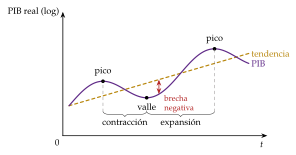
Fuente: elaboración propia (gráfico de la guía del dictamen). Qué hay que ver: el ciclo es la oscilación del PIB alrededor de su tendencia; de pico a valle, contracción; de valle a pico, expansión. La distancia vertical a la tendencia es la brecha de producción.
I.2. Caracterización empírica de los ciclos económicos
Las teorías modernas del ciclo se juzgan por su capacidad para reproducir cómo se mueven a la vez muchas variables. Antes de explicarlo hay que medirlo, en 2 pasos: fechar los puntos de giro y separar el ciclo de la tendencia. Con el ciclo ya separado se obtienen sus hechos estilizados.
I.2.1. ¿Cómo medimos el ciclo? Datación y medición
Datación
Burns y Mitchell fecharon por primera vez los picos y valles del ciclo de Estados Unidos, de modo que un ciclo completo se mide de valle a valle. Hoy lo hacen comités de expertos:
en Estados Unidos, el del NBER, para el que una recesión es una caída significativa de la actividad, extendida por toda la economía y que dura más de unos pocos meses: cuentan a la vez la profundidad, la difusión y la duración (National Bureau of Economic Research, 2026a). Desde la posguerra, las recesiones han durado de media 10 meses y las expansiones, 64; la última, la más corta de su historia, fue de febrero a abril de 2020 (National Bureau of Economic Research, 2026b);4
en la zona del euro, el del Centre for Economic Policy Research (CEPR), que fecha 6 recesiones desde 1970, 2 de ellas casi seguidas: la Gran Recesión (2008-2009) y la crisis de la deuda soberana (2011-2013) (CEPR-EABCN Euro Area Business Cycle Dating Committee, 2026a);
en España, el Comité de Fechado de la Asociación Española de Economía (AEE), que data también 6 recesiones desde 1970; la más larga, la segunda de la doble recesión, de 2011 a 2013, con 10 trimestres de caída (Asociación Española de Economía, Comité de Fechado del Ciclo Económico Español, 2026).
Para seguir el ciclo en tiempo real, antes de que haya datos del PIB, se usan indicadores adelantados y de confianza, que giran antes que la producción: los índices de gestores de compras (PMI) (S&P Global, 2025) y el indicador de sentimiento económico (ESI) de la Comisión Europea (Comisión Europea, 2025).
Resultado: las recesiones y las expansiones difieren en tamaño, duración y frecuencia, y las expansiones son más largas que las recesiones. La visión que se impone es la de una economía expuesta a perturbaciones de distinto origen y tamaño, que llegan al azar y se propagan; las escuelas discrepan sobre cuáles son esas perturbaciones y cómo se propagan.
Medición: tendencia y ciclo
Una serie trimestral tiene 3 componentes: tendencia, ciclo y estacionalidad. La estacionalidad se quita primero, con programas de extracción de señales.5 Lo difícil es separar el ciclo de la tendencia, que no se observa; no hay un único método correcto:
una tendencia lineal supone que la economía crece siempre a la misma tasa, algo que no avala la teoría del crecimiento endógeno, en la que el progreso técnico depende de la innovación y del capital humano [ver tema 3.A.44]. Además, Nelson y Plosser (1982) mostraron que muchas series macroeconómicas tienen una tendencia estocástica (una raíz unitaria): parte de cada perturbación es permanente, y quitar una tendencia determinista a una serie así fabrica ciclos que no existen;
una función de producción estima el PIB potencial con el trabajo, el capital y la productividad tendenciales: es el método de la Comisión Europea (Havik et al., 2014) [ver tema 3.A.28] [ver tema 4.B.4];
los filtros estadísticos separan las oscilaciones por su frecuencia: el más usado es el de Hodrick y Prescott.
El filtro de Hodrick y Prescott (HP) elige la tendencia \(y^p_t\) del logaritmo del PIB, \(y_t\equiv\ln Y_t\), que resuelve \[\tag{1} \begin{array}{rl}\displaystyle \min_{\{y^p_t\}} & \displaystyle \sum_{t=1}^{T}\big(y_t-y^p_t\big)^2+\lambda\sum_{t=2}^{T-1}\big[(y^p_{t+1}-y^p_t)-(y^p_t-y^p_{t-1})\big]^2\end{array}\]
el primer término castiga el ciclo, \(y_t-y^p_t\); el segundo, los cambios en el crecimiento de la tendencia;
el parámetro de suavizado \(\lambda\) decide el reparto:6 con \(\lambda=0\) la tendencia es la propia serie y no hay ciclo; con \(\lambda\to\infty\), una recta;
su elección es discrecional. Hodrick y Prescott (1997) toman \(\lambda=1600\) con datos trimestrales porque juzgan igual de grande un ciclo del 5 % que un cambio de 1/8 de punto en el crecimiento trimestral de la tendencia, y \((5/\tfrac18)^2=1600\); en la práctica, el filtro deja en la tendencia las oscilaciones de más de unos 8 años.7 Con un \(\lambda\) mucho mayor, como el de \(400\,000\) que se usa para el crédito (III.1), la tendencia casi no se dobla y el ciclo de España en 2008 pasa del 3 % al 10 % (gráfico 2).
El componente cíclico es la brecha de producción estadística: \(100\,(y_t-y^p_t)\approx\mathrm{OG}_t\equiv(Y_t-Y^p_t)/Y^p_t\times100\). Es negativa cuando hay recursos ociosos y presiones a la baja sobre la inflación, y positiva cuando la economía se recalienta (gráfico 3).
El filtro es sencillo, pero tiene 3 problemas (Hamilton, 2018; Phillips y Jin, 2021):
es estadístico y ateórico: su tendencia no es el producto natural de ningún modelo;
el final de la muestra se revisa mucho, porque el filtro usa datos futuros que aún no existen: justo cuando más falta hace la brecha, menos fiable es;
las perturbaciones muy grandes tuercen la tendencia: con \(\lambda=1600\), la caída de 2020 hunde la tendencia de España y deja a finales de 2019 una brecha positiva del 5 % que nadie veía entonces (Eurostat, 2026b).
La alternativa son los filtros de paso banda, que se quedan solo con las oscilaciones de entre 6 y 32 trimestres, de año y medio a 8 años: quitan la tendencia, como el HP, y además el ruido de muy corto plazo (Baxter y King, 1999; Christiano y Fitzgerald, 2003) (anexo C).
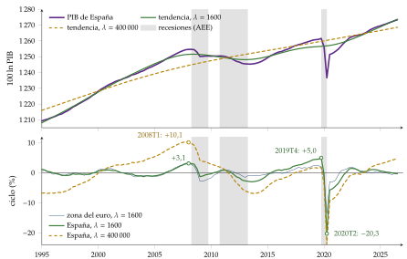
Fuente: elaboración propia con datos de Eurostat (Eurostat, 2026b): volumen encadenado, ajustado de estacionalidad y calendario, 1995T1-2026T3, con las recesiones fechadas por la AEE (Asociación Española de Economía, Comité de Fechado del Ciclo Económico Español, 2026). Arriba, \(100\ln Y_t\) y sus tendencias con \(\lambda=1600\) y \(\lambda=400\,000\); abajo, los componentes cíclicos (%).
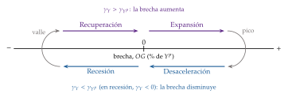
Fuente: elaboración propia (gráfico de la guía del dictamen). Qué hay que ver: arriba, el PIB crece más que su potencial y la brecha avanza hacia la derecha (recuperación y expansión); abajo, crece menos o cae y la brecha retrocede (desaceleración y recesión).
Variables que no se observan. La tendencia del filtro es solo una estimación del producto potencial, \(Y^p_t\), y no coincide con el producto natural \(y^n_t\) de los modelos neokeynesianos, el que habría con precios flexibles [ver tema 3.A.7]. Lo mismo pasa con el tipo de interés natural \(r^n_t\), el que mantiene la producción en su potencial con la inflación estable: no es constante ni se observa, y se estima con filtros que combinan una curva IS y una de Phillips (Laubach y Williams, 2003; Holston, Laubach y Williams, 2017) [ver tema 3.A.36]. Las 3 se revisan mucho con datos nuevos, y por eso conviene no basar la política en una sola estimación.
Para practicar el francés: «À partir de quand pourra-t-on dire que la récession est derrière nous ?», The Conversation, 22 de junio de 2021, https://theconversation.
I.2.2. ¿Qué tienen en común los ciclos? Hechos estilizados
Con el componente cíclico de cada variable, \(\hat x_t\), y el del PIB, \(\hat y_t\) (desviaciones respecto a la tendencia, en logaritmos), cada variable se describe con 4 rasgos:
su volatilidad relativa, la desviación típica de su ciclo dividida por la del PIB, \(\sigma_X/\sigma_Y\);
su dirección: procíclica si su correlación contemporánea con el PIB es positiva, \(\mathrm{corr}(\hat x_t,\hat y_t)>0\); contracíclica si es negativa, y acíclica si es casi nula;
su desfase: adelantada si se mueve antes que el PIB, de modo que \(\mathrm{corr}(\hat x_{t-k},\hat y_t)\) es máxima con \(k>0\), y retrasada si lo hace después;
su persistencia, la autocorrelación de su ciclo, \(\mathrm{corr}(\hat x_t,\hat x_{t-1})\).
Los hechos de Estados Unidos, que comparten casi todas las economías desarrolladas (Stock y Watson, 1999), se resumen en 5 (tabla 1 y gráfico 4):
casi todo se mueve a la vez que el PIB, y con mucha persistencia: la autocorrelación del ciclo del PIB está en torno a 0,9;
la inversión fluctúa de 2,5 a 4,5 veces más que el PIB, y el consumo privado menos, salvo el de bienes duraderos [ver tema 3.A.33] [ver tema 3.A.34];8 la inversión en vivienda se adelanta al ciclo y la variación de existencias es muy volátil;
el comercio exterior fluctúa de 2,5 a 3,7 veces más que el PIB, y el consumo público no tiene un patrón común: es contracíclico en Estados Unidos y casi acíclico en la zona del euro;
el empleo es procíclico, contemporáneo o algo retrasado, y con una volatilidad similar o algo menor que la del producto; el paro es contracíclico, y el salario real, poco volátil y débilmente procíclico;
los precios y los tipos de interés a corto plazo van detrás del ciclo; la bolsa y la pendiente de la curva de tipos, delante.
Con los datos de 1995-2019, el empleo fluctúa algo menos que el PIB en la zona del euro (0,53 veces) y casi igual en Estados Unidos (1,07) (Eurostat, 2026a; Federal Reserve Bank of St. Louis, 2026). No contradice que las horas totales de Estados Unidos fluctúen más que la producción (1,71 veces), por 2 razones: las horas suman a los ocupados el ajuste de la jornada, y desde 1984 la volatilidad del PIB bajó más que la de las horas; antes de 1984 eran casi igual de volátiles (tabla 3).
España se separa en 3 rasgos (Álvarez, Gadea y Gómez Loscos, 2021):
el empleo (1,22 veces) y el consumo privado (1,18) fluctúan más que el PIB; con mucho empleo temporal, las empresas ajustan con personas, no con horas;
la productividad del trabajo es contracíclica: en las recesiones se destruye sobre todo empleo temporal y de sectores poco productivos, como la construcción, y la productividad media sube;
el consumo público es procíclico, porque sigue a la recaudación.
La pandemia rompe estos hechos: con 2020 y 2021 en la muestra, la desviación típica del ciclo del PIB de España pasa de 1,2 a 2,6 y la volatilidad relativa de la inversión baja de 2,9 a 1,6 veces la del PIB, aunque sigue siendo más volátil que el consumo (Eurostat, 2026b). Por eso la tabla se calcula hasta 2019.
| España | Zona del euro | Estados Unidos | |||||||
| Variable | Vol. | Corr. | Pers. | Vol. | Corr. | Pers. | Vol. | Corr. | Pers. |
| PIB (\(\sigma_Y\), %) | 1,20 | 1 | 0,94 | 1,12 | 1 | 0,90 | 1,03 | 1 | 0,88 |
| Consumo privado | 1,18 | 0,88 | 0,82 | 0,60 | 0,80 | 0,92 | 0,79 | 0,87 | 0,90 |
| Inversión (FBCF) | 2,89 | 0,82 | 0,91 | 2,49 | 0,83 | 0,70 | 4,38 | 0,90 | 0,93 |
| Consumo público | 0,95 | 0,45 | 0,90 | 0,47 | \(-0{,}10\) | 0,81 | 1,21 | \(-0{,}53\) | 0,89 |
| Exportaciones | 2,52 | 0,54 | 0,78 | 2,97 | 0,92 | 0,88 | 3,54 | 0,81 | 0,85 |
| Importaciones | 3,65 | 0,72 | 0,84 | 2,90 | 0,91 | 0,86 | 3,68 | 0,88 | 0,88 |
| Empleo (personas) | 1,22 | 0,94 | 0,95 | 0,53 | 0,80 | 0,95 | 1,07 | 0,81 | 0,96 |
| Horas totales | 1,25 | 0,91 | 0,83 | 0,72 | 0,89 | 0,91 | 1,71 | 0,88 | 0,95 |
| Productividad por hora | 0,54 | \(-0{,}26\) | 0,29 | 0,49 | 0,74 | 0,76 | 0,80 | \(-0{,}16\) | 0,72 |
Fuente: cálculo propio con datos de Eurostat (Eurostat, 2026b, 2026a) y de FRED (Federal Reserve Bank of St. Louis, 2026), 1995T1-2019T4. Componente cíclico del filtro HP (\(\lambda=1600\)) del logaritmo de cada serie en volumen. Vol.: desviación típica relativa a la del PIB, \(\sigma_X/\sigma_Y\) (en la fila del PIB, \(\sigma_Y\) en %); Corr.: correlación contemporánea con el PIB; Pers.: autocorrelación de orden 1. Mismos signos y órdenes de magnitud que el filtro de paso banda de Álvarez, Gadea y Gómez Loscos (2021).
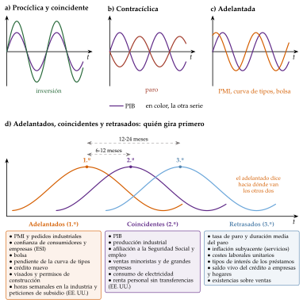
Fuente: elaboración propia a partir de The Conference Board (2026) (gráfico de la guía del dictamen). Qué hay que ver: arriba, si la otra variable se mueve en el mismo sentido que el PIB o en el contrario, si oscila más o menos y si gira antes o después; abajo, que los indicadores adelantados giran primero, los coincidentes después y los retrasados al final.
I.3. La evolución de los ciclos a lo largo del tiempo
Tras la Segunda Guerra Mundial las recesiones se hicieron más cortas y suaves, y desde mediados de los 80 la volatilidad del PIB de Estados Unidos cayó a la mitad: es la Gran Moderación (Kim y Nelson, 1999; McConnell y Pérez-Quirós, 2000). Tuvo 3 explicaciones (Stock y Watson, 2002; Bernanke, 2004):
cambios estructurales: más peso de los servicios, que fluctúan menos que la industria, mejor gestión de las existencias y más crédito para suavizar el consumo;
mejor política económica: bancos centrales independientes que estabilizan la inflación, estabilizadores automáticos, seguro de depósitos y prestamista de última instancia;
buena suerte: perturbaciones más pequeñas, sobre todo del petróleo. A ella atribuyen Stock y Watson (2002) la mayor parte de la caída.
En 2003, Lucas (2003) daba por resuelto, «a todos los efectos prácticos», el problema de prevenir las depresiones. La Gran Recesión de 2008 y la pandemia de 2020 acabaron con la calma y señalaron lo que la explicación había pasado por alto: el crédito acumulado durante los años tranquilos (III).
I.4. Análisis de los ciclos en perspectiva histórica
Una vez descrito el fenómeno, pasamos a las teorías que lo han intentado explicar. Su historia se divide en 4 etapas (gráfico 5); las 2 primeras se resumen aquí y se desarrollan en el anexo A, y la cuarta da lugar a los modelos del apartado II.
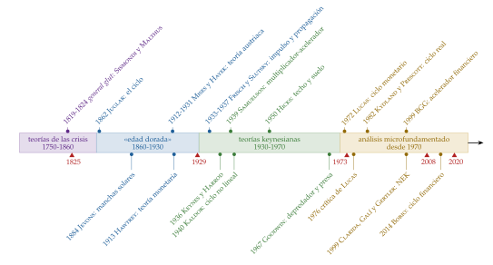
Fuente: elaboración propia.
I.4.1. Primera etapa: las teorías de las crisis (1750-1860)
Hasta mediados del siglo XIX se estudian las crisis como sucesos aislados; la británica de 1825 suele tomarse como la primera crisis general. Las explicaciones son 3:
la sobreproducción o subconsumo: en el debate del general glut (1819-1824), Sismondi (1819) y Malthus (1820) defienden que puede faltar demanda para todo lo producido, frente a la ley de Say, que lo niega (Say, 1820) [ver tema 3.A.2];
el dinero y el crédito: tras las crisis de 1825 y 1836, la inversión se hunde cuando estallan las burbujas que alimentó el crédito fácil;
los desajustes entre sectores, de la escuela histórica alemana, y las teorías socialistas, con las 3 explicaciones de la crisis de Marx: la caída de la tasa de ganancia, la realización (los salarios no bastan para comprar lo que se produce) y la desproporción entre sectores [ver tema 3.A.2].
Ninguna habla aún de un ciclo: el capitalismo industrial era joven y faltaban la historia para ver un patrón, una teoría macroeconómica que lo explicara y estadísticas fiables que lo midieran.
I.4.2. Segunda etapa: la «edad dorada» de las teorías del ciclo (1860-1930)
William Petty ya hablaba en 1662 de un ciclo de unos 7 años de carestías y abundancias (Petty, 1662), pero el ciclo se convierte en tema de investigación con Juglar (1862): las crisis vuelven, y lo que hay que explicar es el ciclo entero.
Sin una teoría macroeconómica, la teoría del equilibrio y la del ciclo avanzaron por separado, y casi cualquier explicación tenía cabida.9 Se agrupan en 6 familias:
climáticas: las manchas solares de Jevons (1884), que, en sentido literal, movían las cosechas y con ellas el ciclo;10
de la sobreinversión (la tradición continental): oleadas de crédito bancario hacia los bienes de capital, impulsadas por el dinero o por la técnica, que acaban cuando se agota la financiación (Tugan-Baranovsky, 1894; Spiethoff, 1902; Cassel, 1918; Robertson, 1915);11
psicológicas y del acelerador (la tradición angloamericana): se invierte esperando una demanda que, cuando llega la nueva capacidad, ya no existe; la inversión responde a la variación de la demanda y amplifica cualquier impulso (Aftalion, 1913; Clark (1917); Pigou, 1927);
monetarias: la teoría puramente monetaria de Hawtrey, basada en los intermediarios que viven del crédito, y la teoría austriaca (Mises, 1912; Hayek, 1931): cuando los bancos prestan a un tipo inferior al natural de Wicksell, se emprenden procesos productivos más largos de lo que el ahorro puede sostener, y la crisis llega cuando el crédito se corta y hay que liquidar las inversiones equivocadas [ver tema 3.A.3];12
del subconsumo: Hobson (1910) anticipa la propensión media a consumir decreciente de Keynes;
de las perturbaciones: Slutzky (1937) muestra que sumar perturbaciones puramente aleatorias produce ondas que parecen ciclos, y Frisch (1933) separa el impulso, aleatorio, del mecanismo de propagación, un sistema que por sí solo convergería con oscilaciones amortiguadas.
La teoría actual del ciclo debe mucho a esta etapa: los hechos de Mitchell y el NBER son su banco de pruebas, y el esquema impulso-propagación de Frisch y Slutsky, su arquitectura.
I.4.3. Tercera etapa: las teorías keynesianas del ciclo (1930-1970)
La Teoría general da por primera vez un marco macroeconómico cerrado, aunque al ciclo solo le dedica el capítulo 22, que lo explica por los vaivenes de la eficiencia marginal del capital (Keynes, 1936, cap. 22) [ver tema 3.A.4]. Sus seguidores construyen 2 familias de modelos deterministas: el multiplicador-acelerador, lineal, y los ciclos endógenos no lineales.
El multiplicador-acelerador: Samuelson (1939) y Hicks (1950)
a) Idea
Harrod (1936) junta las 2 piezas keynesianas de la dinámica:13 el multiplicador, por el que la inversión genera demanda, y el principio de aceleración, por el que la variación de la demanda genera inversión [ver tema 3.A.34]. Samuelson (1939), a sugerencia de Alvin Hansen, las escribe en una ecuación en diferencias y muestra que su interacción basta para generar ciclos sin perturbaciones: un ciclo endógeno de demanda.
b) Modelo
i) Supuestos:
economía cerrada, con precios fijos y capacidad ociosa;
el consumo depende de la renta del periodo anterior, \(C_t=c\,Y_{t-1}\), con \(0<c<1\) la propensión marginal a consumir;
la inversión inducida es proporcional a la variación del consumo, \(I_t=v\,(C_t-C_{t-1})\), con \(v\) la relación capital-producto (el acelerador);
un gasto autónomo constante, \(G\).
ii) Desarrollo: sustituyendo en \(Y_t=C_t+I_t+G\) se obtiene una ecuación en diferencias de segundo orden,
\[Y_t=c\,(1+v)\,Y_{t-1}-c\,v\,Y_{t-2}+G\tag{2}\]
su estado estacionario es el del multiplicador keynesiano, \(Y^*=G/(1-c)\);
su dinámica, \(Y_t=Y^*+A_1z_1^t+A_2z_2^t\), depende de las raíces \(z_1\) y \(z_2\) de \(z^2-c\,(1+v)\,z+c\,v=0\), con \(z_1z_2=c\,v\) y \(A_1\) y \(A_2\) fijadas por las 2 rentas iniciales (\(z_1\), \(z_2\), \(A_1\) y \(A_2\), locales). Hay oscilaciones si las raíces son complejas, \(c\,(1+v)^2<4v\), y son amortiguadas si su módulo, \(\sqrt{c\,v}\), es menor que 1, es decir, si \(c\,v<1\);
las 2 condiciones dividen el plano \((v,c)\) en 4 regiones (gráfico 6): convergencia sin oscilar (con \(v\) pequeño), oscilaciones amortiguadas, oscilaciones explosivas y divergencia sin oscilar (con \(v\) grande);
por ejemplo, con \(c=0{,}8\) y \(v=1\), \(c\,v=0{,}8<1\) y \(c\,(1+v)^2=3{,}2<4\): un aumento de \(G\) lleva la renta a un nivel 5 veces mayor que el aumento, con oscilaciones que se apagan y duran unos 13,5 periodos cada una.14
iii) Implicaciones:
el ciclo puede nacer de la propia demanda, sin perturbaciones, y la inversión, que responde a la variación de las ventas, es su componente más volátil;
pero solo hay oscilaciones regulares y permanentes en el caso límite \(c\,v=1\): con \(c\,v<1\) se apagan, y con \(c\,v>1\) explotan. Un ciclo que ni se apaga ni explota exige perturbaciones que lo reanimen (Frisch) o límites que lo acoten (Hicks);
la política fiscal cambia el nivel de la renta, pero también puede desencadenar oscilaciones.
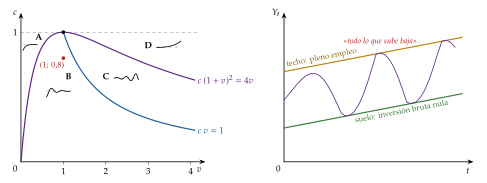
Fuente: elaboración propia a partir de Samuelson (1939) y Hicks (1950). Izquierda: las curvas \(c\,v=1\) (estabilidad) y \(c=4v/(1+v)^2\) (oscilación), que se tocan en \((1,1)\), y las 4 regiones; derecha: una trayectoria explosiva acotada por el techo de pleno empleo y el suelo de la inversión bruta nula.
c) Extensiones
Hicks (1950) toma el caso explosivo, \(c\,v>1\), y lo acota:
un techo: la producción de pleno empleo, que crece con la economía. Al chocar con él la producción deja de crecer, la inversión inducida se hunde y empieza la recesión;
un suelo: la inversión bruta no puede ser negativa, así que en la recesión, como mucho, se deja de reponer el capital que se deprecia. Cuando hay que volver a reponerlo, la inversión tira de la producción y empieza la expansión;
la economía rebota entre ambos: un ciclo acotado, sin necesidad de afinar los parámetros. Es la pegatina de este modelo: «todo lo que sube baja».
Metzler (1941) aplica el mecanismo a las existencias; Goodwin (1951) hace no lineal el acelerador, que solo opera entre unos límites, y Duesenberry (1958) y Pasinetti (1960) lo unen con el crecimiento.
d) Valoración
Coeficientes fijos, sin precios, sin tipos de interés y sin decisiones optimizadoras: ecuaciones ad hoc, expuestas a la crítica de Lucas [ver tema 3.A.6]. Para tener ciclos, los parámetros deben tomar valores muy concretos y poco estables, o hay que añadir frenos desde fuera.
Predice ciclos demasiado regulares, cuando Burns y Mitchell habían mostrado que no lo son.
Pero la idea sobrevive: la inversión es la parte más volátil de la demanda porque responde a la variación de las ventas, y el acelerador vuelve, en clave financiera, con Bernanke, Gertler y Gilchrist (III.3). Es la primera fila de la tabla 4: ciclo endógeno, de demanda, propagado por el acelerador.
El ciclo endógeno: Kalecki, Kaldor (1940) y Goodwin (1967)
Si las relaciones no son lineales, el ciclo ya no depende de parámetros exactos: la economía cae en un ciclo límite, una oscilación que se mantiene sola. Estos modelos se basan en la relación entre clases (trabajadores y empresarios) y en el reparto de la renta:
Kalecki lo anticipa: la inversión se decide con retraso, según los beneficios, y los beneficios dependen a su vez de la inversión (Kalecki, 1933, 1935) [ver tema 3.A.4];
Kaldor (1940): la inversión y el ahorro dependen de la renta en forma de S, con 3 equilibrios; el capital acumulado en el auge desplaza las curvas hasta que el equilibrio alto desaparece y la economía salta a la recesión, y al revés en la recesión;
Goodwin (1967): la participación de los salarios en la renta y la tasa de empleo se persiguen como el zorro y el conejo de Lotka y Volterra. Con mucho empleo suben los salarios, caen los beneficios y la inversión, sube el paro, se moderan los salarios y vuelve la inversión. No hay que confundirlo con el acelerador no lineal del mismo autor (Goodwin, 1951).
Sus ecuaciones, sus gráficos y sus límites están en el anexo D. Explican el ciclo desde dentro y unen ciclo, crecimiento y reparto, pero son deterministas y, paradójicamente para ser keynesianos, dejan fuera el dinero y las finanzas.15
El ciclo político
Kalecki (1943) ya vio que a los gobiernos podía no convenirles el pleno empleo duradero, y Nordhaus (1975) lo convierte en un ciclo: con votantes miopes, el gobierno expande antes de las elecciones y ajusta después. Con expectativas racionales queda en ciclos presupuestarios más suaves (Rogoff, 1990) [ver tema 4.B.2].
I.4.4. Cuarta etapa: el análisis microfundamentado del ciclo (desde 1970)
La estanflación de los 70, la revolución de las expectativas racionales y la crítica de Lucas (Lucas, 1976) acaban con los modelos keynesianos de ecuaciones ad hoc: si los parámetros de un modelo cambian cuando cambia la política, el modelo no sirve para evaluarla [ver tema 3.A.6]. El ciclo vuelve a estudiarse con modelos de equilibrio general en los que los agentes optimizan:
el primero es un ciclo nominal: en Lucas (1972), las perturbaciones monetarias no anticipadas mueven la producción porque los productores las confunden con cambios de precios relativos (II.2.1);
la nueva macroeconomía clásica pasa después al ciclo real: Kydland y Prescott (1982) y Long y Plosser (1983) reproducen los hechos estilizados con perturbaciones de productividad, mercados que se vacían y sin gobierno. El cambio es de método, los modelos EGDE, y de concepto: el ciclo es eficiente y estabilizarlo no mejora el bienestar (II.1);
la evidencia de los modelos de vectores autorregresivos (VAR) de los 80 y los 90 muestra que la política monetaria sí mueve la actividad a corto plazo (C. A. Sims, 1992). La nueva economía keynesiana toma el método del ciclo real y le añade competencia monopolística y rigideces nominales, con las que el dinero vuelve a importar (II.2).
En resumen, el ciclo se mide como la desviación respecto a una tendencia que no se observa, sus hechos estilizados son el banco de pruebas de cualquier teoría, y las primeras teorías lo explicaron con la dinámica de la demanda, sin decisiones optimizadoras ni un papel para el dinero. Una vez estudiados el ciclo y sus primeras teorías, pasamos a los modelos actuales, que buscan su origen en la tecnología o en el dinero.
II. Ciclos nominales y reales en los modelos de equilibrio general dinámico y estocástico
Una vez vistos el ciclo y las teorías que lo explicaban con la dinámica de la demanda, pasamos a los modelos actuales, que lo explican con perturbaciones que se propagan por decisiones óptimas.
Conclusión anticipada: el ciclo real muestra que una economía eficiente, sin dinero ni fallos de mercado, fluctúa ante perturbaciones de productividad, y deja el método que hoy usan todos: los modelos de equilibrio general dinámicos y estocásticos (EGDE). Pero no consigue que el dinero importe ni que el empleo se mueva como en los datos. Los ciclos nominales, del monetarismo al modelo neokeynesiano, devuelven un papel al dinero con información imperfecta o con rigideces, y con ellas el ciclo deja de ser eficiente.
II.1. La nueva macroeconomía clásica: los modelos de ciclo real
II.1.1. Descripción: del modelo de Ramsey-Cass-Koopmans al EGDE
La teoría del ciclo real defiende que ciclo y crecimiento se explican con la misma teoría: su modelo es un modelo de crecimiento, el de Ramsey, Cass y Koopmans [ver tema 3.A.43], con un hogar y una empresa representativos, competencia perfecta y sin fallos de mercado, al que se le hacen 3 cambios (D. Romer, 2019, cap. 5):
perturbaciones aleatorias y persistentes a la productividad total de los factores (PTF), medidas con el residuo de Solow [ver tema 3.A.45];
una oferta de trabajo que responde al salario y al tipo de interés, a la manera de Lucas y Rapping: la elasticidad de Frisch, \(\varepsilon^F_{L,w}=1/\varphi\), mide cuánto se trabaja de más cuando el salario es temporalmente alto [ver tema 3.A.25];
formas funcionales explícitas y valores numéricos de los parámetros, para comparar el modelo con los datos.
Es el primer modelo EGDE: «dinámico se refiere a que hogares y empresas miran hacia delante; estocástico, a que hay shocks; general, a que se incluye toda la economía; y equilibrio, a que se explicitan las restricciones y los objetivos de hogares y empresas» (Kocherlakota, 2010). Los agentes forman sus expectativas de forma racional (Muth, 1961) [ver tema 3.A.6].
Cómo se resuelve: como no hay fallos de mercado, el equilibrio competitivo coincide con la solución de un planificador benevolente, por el primer teorema fundamental de la economía del bienestar (1TFEB) [ver tema 3.A.22], y se resuelve con programación dinámica [ver tema 3.A.29]. Salvo en casos muy simplificados, como el de McCallum, no tiene solución cerrada: se linealiza alrededor del estado estacionario y se resuelve y simula numéricamente. El precio es la transparencia: no se ve en general por qué canal actúa cada parámetro.16
Serie de vídeos de Everything Econ sobre el modelo de ciclo real: el modelo, https://youtu.
II.1.2. Modelo de ciclo real (Kydland y Prescott, 1982; versión de McCallum, 1989)
a) Idea
La pregunta: ¿pueden las perturbaciones de productividad, en una economía competitiva con agentes que optimizan, explicar las fluctuaciones? Kydland y Prescott (1982) y Long y Plosser (1983) respondieron que sí, sin dinero ni fallos de mercado.
Pegatina: «al mal tiempo, buena cara». Una recesión es la respuesta óptima a una mala racha de productividad: se trabaja y se invierte menos cuando rinde menos hacerlo.
b) Modelo
i) Supuestos
Economía cerrada, sin sector público ni dinero, con un solo bien, en tiempo discreto y horizonte infinito.
Un hogar y una empresa representativos, competencia perfecta, precios y salarios flexibles. El bien es el numerario, \(P_t=1\): \(w_t\) es el salario real y \(r_t+\delta\) el alquiler del capital.
Tecnología Cobb-Douglas con una perturbación tecnológica persistente, \(\varepsilon^A_t\) ruido blanco con desviación típica \(\sigma_\varepsilon\), y \(0\le\rho_A<1\) [ver tema 3.A.11].
Expectativas racionales.
ii) Desarrollo
El hogar elige consumo, horas y capital para maximizar su utilidad esperada: \[\begin{array}{rl}\displaystyle \max_{\{C_t,L_t,K_{t+1}\}} & \displaystyle \mathbb{E}_0\sum_{t=0}^{\infty}\beta^t\left[\frac{C_t^{1-\theta}-1}{1-\theta}-\chi\,\frac{L_t^{1+\varphi}}{1+\varphi}\right] \\ \text{s.a.} & C_t+K_{t+1}=w_tL_t+(1+r_t)\,K_t\end{array}\] con \(\theta\) la aversión relativa al riesgo (la elasticidad de sustitución intertemporal es \(1/\theta\)), \(\chi\) el peso de la desutilidad del trabajo y \(1/\varphi\) la elasticidad de Frisch.
La empresa alquila capital y trabajo cada periodo y paga sus productos marginales: no tiene un problema intertemporal, salvo que haya costes de ajuste [ver tema 3.A.34].
Las ecuaciones del modelo: tecnología, precios de los factores, decisiones del hogar (consumo hoy o mañana; ocio o consumo) y ley de movimiento del capital, \[\begin{aligned} Y_t&=A_tK_t^{\alpha}L_t^{1-\alpha},\qquad \ln A_t=\rho_A\ln A_{t-1}+\varepsilon^A_t \tag{3}\\ w_t&=(1-\alpha)A_t\left(\tfrac{K_t}{L_t}\right)^{\alpha},\qquad r_t+\delta=\alpha A_t\left(\tfrac{K_t}{L_t}\right)^{\alpha-1} \tag{4}\\ C_t^{-\theta}&=\beta\,\mathbb{E}_t\!\left[C_{t+1}^{-\theta}(1+r_{t+1})\right],\qquad \chi L_t^{\varphi}=C_t^{-\theta}w_t \tag{5}\\ K_{t+1}&=(1-\delta)K_t+Y_t-C_t \tag{6} \end{aligned}\] La ecuación de Euler es la estocástica del [ver tema 3.A.29]; la del trabajo, la condición intratemporal del [ver tema 3.A.25]. Son 7 variables endógenas (\(Y_t\), \(C_t\), \(I_t\), \(K_{t+1}\), \(L_t\), \(w_t\), \(r_t\)), una exógena (\(A_t\)) y 8 parámetros (\(\alpha\), \(\beta\), \(\delta\), \(\theta\), \(\chi\), \(\varphi\), \(\rho_A\) y \(\sigma_\varepsilon\)) (anexo B).17
Mecanismo ante una perturbación tecnológica positiva y transitoria (gráfico 7):
sube la producción directamente, con los mismos factores;
suben el salario y el rendimiento del capital: como la mejora es temporal, conviene trabajar más ahora (sustitución intertemporal) y ahorrar parte de la renta extra para repartirla en el tiempo, de modo que la inversión sube mucho y el consumo poco;
la inversión de hoy es capital de mañana: el efecto dura más que la perturbación (propagación), aunque casi toda la persistencia viene de \(\rho_A\).
Si la perturbación es permanente, la respuesta cambia (tabla 2).

Fuente: elaboración propia: simulación del modelo log-linealizado con \(\alpha=1/3\), \(\beta=0{,}99\), \(\delta=0{,}025\), \(\theta=1\), \(\varphi=1\), \(\sigma_\varepsilon=0{,}007\) y \(\rho_A=0{,}95\) (líneas continuas) o \(\rho_A=0\) (discontinuas), con los valores de Prescott (1986b) y Hansen y Wright (1992) (gráfico del tema de la nueva macroeconomía clásica).
| Transitoria | Permanente | |
|---|---|---|
| Horas | Suben: domina la sustitución intertemporal (conviene trabajar mientras dura) | Apenas cambian: el efecto renta compensa el de sustitución |
| Consumo | Sube poco: la renta extra se ahorra y se reparte en el tiempo | Salta y sigue subiendo mientras se acumula capital |
| Inversión | Sube mucho y vuelve a su nivel | Sube y se mantiene alta hasta que el capital alcanza su nuevo estado estacionario |
Fuente: elaboración propia a partir de D. Romer (2019, cap. 5) y King y Rebelo (1999).
Una solución cerrada (McCallum, 1989): con depreciación completa (\(\delta=1\)), utilidad logarítmica (\(\theta=1\)) y trabajo inelástico (\(\chi=0\), \(L_t=1\)), la ecuación de Euler es \(1/C_t=\beta\,\mathbb{E}_t\big[\alpha A_{t+1}K_{t+1}^{\alpha-1}/C_{t+1}\big]\), y la conjetura de que el hogar ahorra una fracción constante \(s\) de la producción se cumple con \(s=\alpha\beta\): la tasa de ahorro constante es un resultado, no un supuesto (anexo B), \[K_{t+1}=\alpha\beta\,A_tK_t^{\alpha},\qquad C_t=(1-\alpha\beta)\,A_tK_t^{\alpha}.\] En desviaciones respecto al estado estacionario, \(\hat y_t\equiv\ln Y_t-\ln\overline Y\), la producción sigue
\[\hat y_{t+1}=\alpha\,\hat y_t+\ln A_{t+1}\tag{7}\]
con \(\rho_A=0\), una perturbación de un solo periodo se desvanece poco a poco, \(\hat y_{t+k}=\alpha^k\): con \(\alpha\approx1/3\), 2 periodos después queda un 11 % (gráfico 8);
con \(\rho_A>0\), \(\hat y_{t+k}=(\rho_A^{k+1}-\alpha^{k+1})/(\rho_A-\alpha)\): la respuesta tiene forma de joroba (1,28 en el periodo siguiente con \(\rho_A=0{,}95\));
el precio de la solución cerrada: el consumo y la inversión son proporciones fijas de la producción, igual de volátiles que ella, y el empleo no se mueve.

Fuente: elaboración propia a partir de McCallum (1989), con \(\alpha=1/3\) (gráfico del tema de la nueva macroeconomía clásica).
iii) Implicaciones
Origen, propagación y persistencia: el impulso es real, exógeno y aleatorio (la tecnología); se propaga por el equilibrio general (precios de los factores, sustitución intertemporal, inversión), y persiste por la acumulación de capital y, sobre todo, por la persistencia de la propia perturbación.
El ciclo es eficiente: sin fallos de mercado, el equilibrio es óptimo de Pareto, las fluctuaciones son respuestas óptimas y el paro es voluntario. Estabilizar empeoraría el bienestar [ver tema 3.A.22].
El dinero es neutral y no hace falta para explicar el ciclo.
Crecimiento y ciclo, una sola teoría: el mismo modelo explica la tendencia y las desviaciones.
c) Extensiones
Trabajo indivisible: se trabaja a jornada completa o no se trabaja; las horas varían por el número de ocupados y la elasticidad agregada es alta aunque la individual sea baja (Hansen, 1985; Rogerson, 1988) [ver tema 3.A.25].
Gasto público: con gasto, la ley de movimiento del capital es \(K_{t+1}=(1-\delta)K_t+Y_t-C_t-G_t\); un gasto financiado con impuestos de suma fija hace más pobres a los hogares, que trabajan más (efecto riqueza), y añade una segunda perturbación real (Christiano y Eichenbaum, 1992; Baxter y King, 1993) [ver tema 3.A.38].
Impuestos distorsionadores: los cambios de los tipos impositivos sobre el trabajo y el capital son otra perturbación real que mejora el ajuste (McGrattan, 1994).
Varios sectores: sus perturbaciones no se compensan entre sí y se propagan por las compras intermedias (Long y Plosser, 1983).
Dinero: con una restricción de pago por adelantado, el dinero sigue siendo casi neutral (Cooley y Hansen, 1989) [ver tema 3.A.35].
d) Evidencia empírica
El método es la calibración (Kydland y Prescott, 1982; Prescott, 1986b): dar a los parámetros los valores que salen de los estudios microeconómicos y de las medias de largo plazo, simular el modelo y comparar sus momentos (volatilidades y correlaciones del componente cíclico, con el filtro HP de I.2.1) con los de los datos, en lugar de estimarlo y contrastarlo econométricamente.
Hansen y Wright (1992) calibran la tecnología con \(\rho_A=0{,}95\) y \(\sigma_\varepsilon=0{,}007\), los valores de Prescott (1986b) para el residuo de Solow. El modelo reproduce unos 2 tercios de la volatilidad de la producción, un consumo más suave y una inversión más volátil que la producción (tabla 3). Prescott atribuía a la tecnología «más de la mitad» de las fluctuaciones de la posguerra, con una mejor estimación cercana al 75 % (Prescott, 1986a).
Falla en el mercado de trabajo: las horas varían la mitad de lo observado y están casi perfectamente correlacionadas con la productividad, cuando en los datos esa correlación es ligeramente negativa; desde mediados de los 80 es claramente negativa, \(-0{,}60\) en 1984-2019 (Federal Reserve Bank of St. Louis, 2026).
El residuo de Solow sigue de cerca al ciclo, como sostenía Prescott; corregido por la utilización del capital y del trabajo, la relación casi desaparece (gráfico 9) (Basu, Fernald y Kimball, 2006).
| Datos, 1947-1991 | Modelo estándar | Datos, 1984-2019 | |
|---|---|---|---|
| Desviación típica de la producción (%), \(\sigma_Y\) | 1,92 | 1,30 | 1,00 |
| Consumo frente a producción, \(\sigma_C/\sigma_Y\) | 0,45 | 0,31 | 0,63 |
| Inversión frente a producción, \(\sigma_I/\sigma_Y\) | 2,78 | 3,15 | 3,97 |
| Horas frente a producción, \(\sigma_L/\sigma_Y\) | 0,96 | 0,49 | 1,68 |
| Horas frente a productividad, \(\sigma_L/\sigma_{Y/L}\) | 2,15 | 0,94 | 1,98 |
| Correlación de las horas con la productividad | \(-0{,}14\) | 0,93 | \(-0{,}60\) |
Fuente: datos y modelo estándar de Hansen y Wright (1992) (1947T1-1991T3; horas de la encuesta de establecimientos), y cálculo propio para 1984T1-2019T4 con datos de FRED (sector empresarial no agrícola) (Federal Reserve Bank of St. Louis, 2026). Componente cíclico del filtro de Hodrick y Prescott (Hodrick y Prescott, 1997). Tabla del tema de la nueva macroeconomía clásica.

Fuente: elaboración propia con la serie trimestral de productividad total de los factores de Fernald (2026); componente cíclico del filtro de Hodrick y Prescott (gráfico del tema de la nueva macroeconomía clásica).
e) Valoración
¿Qué perturbación? El residuo de Solow no es solo tecnología: se mueve con el gasto militar y la política monetaria (Hall, 1988b) y recoge la utilización de los factores; corregido, las perturbaciones son más pequeñas (Burnside, Eichenbaum y Rebelo, 1993) [ver tema 3.A.45]. Y cuesta interpretar las recesiones como retrocesos tecnológicos.
Poca propagación propia: la producción copia la perturbación; la persistencia se impone con \(\rho_A\) (Cogley y Nason, 1995; Rotemberg y Woodford, 1996).
Mercado de trabajo: necesita una oferta de trabajo mucho más elástica de lo que estiman los estudios microeconómicos, y una elasticidad de sustitución intertemporal del consumo que los datos sitúan cerca de cero (Hall, 1988a) [ver tema 3.A.33]; cuando se identifican bien las perturbaciones tecnológicas, las horas caen a corto plazo (Galí, 1999).
El dinero sí importa: la evidencia histórica, narrativa y econométrica rechaza la neutralidad a corto plazo (anexo B). Y un modelo que no explica las grandes depresiones se queda en los temblores pequeños: ya Fisher (1933) advertía que las explicaciones habituales del ciclo «pueden bastar para explicar las perturbaciones pequeñas, pero todas juntas probablemente no bastan para explicar las grandes»; para Bernanke (1995), entender la Gran Depresión es «el Santo Grial de la macroeconomía».
Méritos: con una sola perturbación y pocos parámetros reproduce lo esencial de la volatilidad relativa; une ciclo y crecimiento, y deja un método: el modelo que todos los demás modifican (Rebelo, 2005). No se ha abandonado: es el núcleo de los EGDE, a los que se añaden fricciones.
II.1.3. Resultados y evaluación: origen, propagación y persistencia
Las 3 preguntas de la introducción tienen en el ciclo real una respuesta clara (tabla 4):
origen: exógeno y real, la tecnología, con \(\varepsilon^A_t\) aleatoria;
propagación: los precios de los factores y la sustitución intertemporal llevan la perturbación al empleo, al consumo y a la inversión;
persistencia: la acumulación de capital la alarga, pero sobre todo la impone la persistencia de la perturbación, \(\rho_A\).
Lectura de política: si las fluctuaciones son respuestas óptimas a perturbaciones reales, el ciclo es eficiente y estabilizarlo no mejora el bienestar. Es la conclusión más discutida del modelo.
Su herencia: el método (agentes que optimizan, expectativas racionales, equilibrio general, perturbaciones aleatorias y calibración) se quedó; sus conclusiones, no. Sin dinero ni rigideces no explica el efecto real de la política monetaria ni el ciclo del empleo.
En resumen, el ciclo real demuestra que una economía eficiente fluctúa, pero no consigue que el dinero importe. Una vez visto el ciclo real, pasamos a los ciclos nominales, que conservan su método y le añaden lo que le falta.
II.2. Los ciclos nominales: del monetarismo a la nueva economía keynesiana
II.2.1. Descripción: del ciclo monetario al modelo neokeynesiano
El monetarismo: para Friedman y Schwartz (1963), entre 1867 y 1960 los grandes movimientos del dinero de origen monetario precedieron a los de la producción en el mismo sentido, y la Gran Depresión fue una gran contracción monetaria [ver tema 3.A.5].
Friedman (1964) describe la producción como una cuerda pegada a un techo, el potencial, de la que de vez en cuando se tira hacia abajo, a menudo por causas monetarias: el plucking model. Lo contrasta casi 30 años después (Friedman, 1993): la amplitud de cada caída predice la de la recuperación que la sigue, pero no al revés.
Con datos de paro de muchos países, Dupraz, Nakamura y Steinsson (2025) encuentran la misma asimetría: las recesiones son caídas por debajo del potencial, no oscilaciones simétricas alrededor de él.
El ciclo de equilibrio de Lucas (1972), el primer ciclo nominal microfundamentado: con expectativas racionales e información imperfecta, cada productor ve su precio pero no el nivel general, y confunde en parte una subida de todos los precios con una de su precio relativo. Solo la parte no anticipada de la política monetaria mueve la producción, \(y_t=y^n+\psi\,(p_t-p^e_t)\), y la política sistemática es inútil [ver tema 3.A.6].18
Su crisis: los precios se conocen pronto, la confusión no explica recesiones de varios años y la política anticipada también parecía tener efectos. La respuesta de los 80 tomó 2 caminos: olvidarse del dinero (el ciclo real) o justificar las rigideces.
La evidencia de que el dinero importa: los episodios en que la Reserva Federal decidió provocar una recesión para bajar la inflación (C. D. Romer y Romer, 1989) y los modelos de vectores autorregresivos (VAR) con la política medida por el tipo de interés (C. A. Sims, 1992; Christiano, Eichenbaum y Evans, 1996) muestran efectos reales grandes y rápidos (anexo B).
La nueva economía keynesiana (NEK) de 2.ª generación toma el método del ciclo real y le cambia 2 piezas, la competencia monopolística, para que las empresas fijen precios, y las rigideces nominales, para que no los cambien todas a la vez (De Vroey, 2016; Goodfriend y King, 1997) [ver tema 3.A.7]. Es la nueva síntesis neoclásica.
II.2.2. El modelo canónico (Clarida, Galí y Gertler, 1999)
a) Idea
La pregunta: ¿qué pasa en el ciclo real si las empresas fijan precios y solo algunas pueden cambiarlos cada periodo? Cada periodo, cada empresa puede revisar su precio con probabilidad \(1-\eta\) (Calvo, 1983). Basta para que la política monetaria tenga efectos reales y el ciclo deje de ser eficiente.
b) Modelo
i) Supuestos
Los del ciclo real, más un continuo de bienes diferenciados en competencia monopolística, precios a la Calvo y un banco central que fija el tipo de interés nominal; sin capital, para simplificar.
ii) Desarrollo
En logaritmos y desviaciones, con \(x_t\equiv y_t-y^n_t\) la brecha respecto a la producción natural (la que habría con precios flexibles), el modelo se resume en 3 ecuaciones (Clarida, Galí y Gertler, 1999; Galí, 2015): \[\begin{aligned} x_t&=\mathbb{E}_t[x_{t+1}]-\tfrac{1}{\theta}\big(i_t-\mathbb{E}_t[\pi_{t+1}]-r^n_t\big) \tag{8}\\ \pi_t&=\beta\,\mathbb{E}_t[\pi_{t+1}]+\kappa\,x_t+u_t \tag{9}\\ i_t&=\rho+\phi_\pi\,\pi_t+\phi_x\,x_t+\varepsilon_t \tag{10} \end{aligned}\]
la IS dinámica sale de la ecuación de Euler del hogar: la brecha baja si el tipo real supera al natural, \(r^n_t\), con más fuerza cuanto mayor es la elasticidad de sustitución intertemporal, \(1/\theta\); las perturbaciones de demanda van dentro de \(r^n_t\);
la curva de Phillips neokeynesiana sale de la fijación de precios de Calvo: la inflación es el valor actual de las brechas futuras, con pendiente \(\kappa\), y \(u_t\) recoge las perturbaciones de costes, que introducen Clarida, Galí y Gertler (1999);
la regla de Taylor cierra el modelo: el banco central sube el tipo nominal con la inflación y la brecha, y \(\varepsilon_t\) es la perturbación monetaria (Taylor, 1993).19
Mecanismo: si el banco central sube el tipo nominal y los precios no se ajustan, sube el tipo real, el hogar consume menos, cae la brecha y con ella la inflación. Ante una perturbación de demanda, el tipo sube y frena a la vez la inflación y la brecha; ante una de costes, la inflación sube y la brecha cae (gráficos 10 y 11).
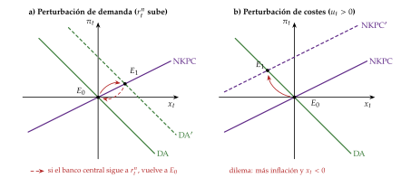

Fuente: elaboración propia (gráfico del tema de la nueva economía keynesiana).
iii) Implicaciones
El dinero no es neutral a corto plazo, aunque sí a largo, cuando todos los precios se han ajustado.
El ciclo es ineficiente: las rigideces impiden que la producción siga a la natural, y la política puede mejorar el bienestar.
Divina coincidencia: sin perturbaciones de costes (\(u_t=0\)), si el tipo nominal sigue al natural, la inflación y la brecha son cero a la vez y basta con estabilizar la inflación (Goodfriend y King, 1997; Rotemberg y Woodford, 1997); el nombre se lo pusieron Blanchard y Galí (2007). Se rompe con perturbaciones de costes, con salarios reales rígidos (Blanchard y Galí, 2007) o con fricciones de búsqueda en el mercado de trabajo (Blanchard y Galí, 2010) [ver tema 3.A.26].
Variables que no se observan: la brecha y el tipo natural del modelo no se miden; se estiman (I.2.1), por ejemplo con el filtro de Laubach y Williams (2003) y Holston, Laubach y Williams (2017), y sus errores pasan a la política [ver tema 3.A.36].
Jordi Galí, «The New Keynesian Perspective on Economic Fluctuations» (conferencia en la Paris School of Economics), https://youtu.
II.2.3. Resultados y evaluación
Origen, propagación y persistencia (tabla 4): muchas perturbaciones (tecnología, demanda, costes, política monetaria), nominales o reales; se propagan por el equilibrio general y por las rigideces nominales, que también las hacen durar.
Extensiones: para ajustar los datos, los modelos medianos añaden hábitos de consumo [ver tema 3.A.33], costes de ajuste de la inversión, salarios rígidos e indexación (Christiano, Eichenbaum y Evans, 2005; Smets y Wouters, 2003). El de Smets y Wouters (2003), estimado para la zona del euro, es el antecedente del NAWM II, el modelo estructural principal del BCE (Coenen et al., 2018).
Valoración: es el marco dominante en la enseñanza, la investigación y los bancos centrales (Galí, 2018), pero hasta 2008 no tenía bancos ni crédito, y sus agentes son idénticos. Los modelos con hogares heterogéneos (HANK) cambian la transmisión de la política (Kaplan, Moll y Violante, 2018) [ver tema 3.A.37].
En resumen, los ciclos nominales devuelven un papel al dinero: con información imperfecta en Lucas y con rigideces en la NEK, en la que el ciclo es ineficiente y la política monetaria lo puede suavizar. Les falta el crédito. Una vez vistos los ciclos reales y nominales, pasamos al ciclo financiero.
Agentes heterogéneos (HANK). En estos modelos, los hogares difieren en renta y riqueza y muchos no pueden endeudarse, así que su propensión marginal a consumir es alta. La política monetaria actúa sobre todo a través de la renta y el empleo (efectos indirectos) y no del tipo de interés real, como con el hogar representativo, y la política fiscal y la distribución importan para el ciclo (Kaplan, Moll y Violante, 2018) [ver tema 3.A.37].
III. El ciclo financiero y sus interrelaciones con el ciclo real
Una vez vistos los ciclos nominales y reales, pasamos al tercer plano que la crisis de 2008 obligó a meter en los modelos: el crédito.
Conclusión anticipada: los modelos del apartado II trataban las finanzas como un velo. El crédito y los precios de la vivienda tienen su propio ciclo, más largo y amplio que el económico, que se alimenta solo en los auges y acaba en crisis. A través del patrimonio de los prestatarios amplifica el ciclo real, y por eso las recesiones que coinciden con una crisis financiera son más hondas y largas y piden, además de la política monetaria, una política macroprudencial.
III.1. El ciclo financiero: concepto, medición y hechos estilizados
Concepto: el ciclo financiero son las oscilaciones conjuntas del crédito y de los precios de los activos, que se refuerzan entre sí a través de la percepción del riesgo, la actitud ante él y las restricciones de financiación (Borio, 2014). Se resume con 2 variables: el crédito al sector privado y el precio de la vivienda; la bolsa encaja mucho peor (gráfico 12).
Hechos estilizados (Drehmann, Borio y Tsatsaronis, 2012; Borio, 2014):
es más largo: el ciclo económico dura de 1 a 8 años; el financiero, unos 16 de media en 7 economías avanzadas desde los años 60, y se mide con filtros que buscan oscilaciones de 8 a 30 años;
es más amplio, y su duración y su amplitud crecieron desde mediados de los 80, con la liberalización financiera y unos bancos centrales centrados en la inflación;
sus picos coinciden con las crisis bancarias;
las recesiones que coinciden con su fase de caída son mucho más hondas (Claessens, Kose y Terrones, 2012).
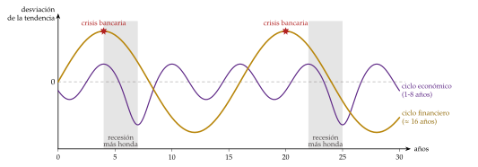
Medición: la brecha crédito-PIB es la distancia, en puntos, entre la ratio del crédito al sector privado sobre el PIB y su tendencia: la versión financiera de la brecha de producción (I.2.1). La tendencia se calcula con un filtro de Hodrick y Prescott de una cola, solo con datos pasados, y \(\lambda=400\,000\), para captar ciclos largos. Es la guía de Basilea III para el colchón de capital anticíclico: se empieza a activar cuando la brecha supera 2 puntos y llega a su máximo, el 2,5 % de los activos ponderados por riesgo, con una brecha de 10 (Comité de Supervisión Bancaria de Basilea, 2010) [ver tema 3.B.27].
-
la brecha llegó a \(+47{,}3\) puntos en el segundo trimestre de 2007, en vísperas de la crisis; cayó hasta \(-55{,}6\) a finales de 2017 y aún es negativa, \(-24{,}3\) a comienzos de 2026, con un crédito del 119,4 % del PIB. La ratio siguió subiendo hasta el 233,8 % en 2010: la brecha cae antes que la ratio, porque la tendencia estadística arrastra el auge durante años (Bank for International Settlements, 2026b);
con el método de Drehmann, Borio y Tsatsaronis (2012), el ciclo financiero español tuvo picos en 1991 y a finales de 2008, 17 años y medio después. En la primavera de 2009, con el PIB en su valle, el ciclo financiero estaba aún cerca de su máximo, alcanzado a finales de 2008: el real y el financiero no van al compás (Bank for International Settlements, 2026d, 2026c);
la recesión de 2008, que empezó en el crédito y la vivienda, fue menos honda que la de 2020 pero mucho más larga: el PIB tardó más de 8 años en recuperar su máximo, frente a 2 años y medio tras la pandemia (gráfico 15) (Instituto Nacional de Estadística, 2026a).
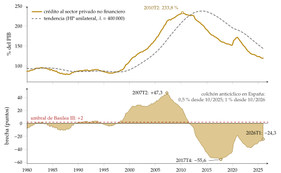
Fuente: elaboración propia con datos del BIS (Bank for International Settlements, 2026b), 1980T1-2026T1: tendencia con un filtro HP de una cola y \(\lambda=400\,000\); umbral de 2 puntos del colchón anticíclico (Comité de Supervisión Bancaria de Basilea, 2010).
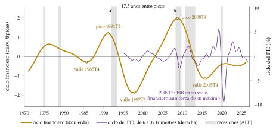
Fuente: elaboración propia con el método de Drehmann, Borio y Tsatsaronis (2012) (componente de 8 a 30 años del crédito real, la ratio crédito/PIB y el precio real de la vivienda) y datos del BIS (Bank for International Settlements, 2026d, 2026c, 2026a) y de Eurostat (Eurostat, 2026b); ciclo del PIB de 6 a 32 trimestres.
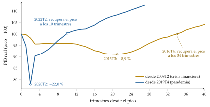
Fuente: elaboración propia con datos de Eurostat (Eurostat, 2026b): trimestres desde el pico de 2008T2 y de 2019T4.
III.2. Teorías del ciclo financiero: Fisher, Minsky y Kindleberger
Las teorías del ciclo financiero tienen en común que la crisis se incuba en el auge: el crédito que lo financia es el que lo acaba. Ya lo anticiparon los austriacos, con el crédito que se adelanta al ahorro (I.4.2).
La deflación por deudas (Fisher, 1933) [ver tema 3.A.3]: tras el crac de 1929, Fisher explica las grandes depresiones por 2 males que se refuerzan, el sobreendeudamiento y la deflación.
los deudores liquidan deudas y venden activos a la fuerza; caen los depósitos y los precios; con la deflación sube el valor real de lo que queda por pagar, caen el patrimonio y los beneficios, quiebran empresas y bancos, y se recortan la producción y el empleo: «cuanto más pagan los deudores, más deben» (Fisher, 1933, pág. 344; traducción propia);
la salida es reflacionar [ver tema 3.A.41]. La idea vuelve con el canal del crédito de Bernanke (1983) y con el acelerador financiero (III.3).
La hipótesis de la inestabilidad financiera (Minsky, 1986, 1992) [ver tema 3.A.4]: la inestabilidad nace dentro del sistema financiero.
hay 3 posiciones financieras: de cobertura (los ingresos esperados pagan los intereses y el principal), especulativa (pagan los intereses; el principal hay que refinanciarlo) y Ponzi (no pagan ni los intereses: hay que endeudarse más o vender activos, y solo funciona si sus precios suben);
en una expansión larga, los éxitos animan a endeudarse y los prestamistas relajan sus criterios: las posiciones pasan de cobertura a especulativas y de especulativas a Ponzi. La estabilidad es desestabilizadora: basta una subida de tipos o una caída de los ingresos para que las ventas forzosas hundan los precios de los activos. Pegatina: «después de la calma viene la tempestad».
La anatomía de las crisis (Kindleberger, 1978): un desplazamiento (una innovación, una desregulación), el auge del crédito, la euforia, el pánico y el crac [ver tema 3.B.26].
Explican el auge y la crisis, pero no dejaron un modelo formal ni dicen cuánto cae la actividad real. Es lo que hace la literatura del acelerador financiero.
III.3. Interrelaciones con el ciclo real: el acelerador financiero y la política económica
a) Idea
En los modelos del apartado II da igual cómo se financie una empresa, y las finanzas no afectan a la economía real. Con información asimétrica deja de ser así: el prestamista no ve bien el proyecto, teme el impago y exige garantías o una prima; si sube el tipo, atrae a los proyectos más arriesgados y prefiere racionar el crédito (Stiglitz y Weiss, 1981) [ver tema 3.A.13]. Entonces el patrimonio de los prestatarios importa, y el ciclo financiero y el real se alimentan mutuamente.
b) Modelo
i) Supuestos
Un modelo neokeynesiano con capital en el que los empresarios financian la inversión con su riqueza neta y con deuda; el prestamista solo observa el resultado de cada proyecto pagando un coste de verificación (Bernanke y Gertler, 1989; Bernanke, Gertler y Gilchrist, 1999).
ii) Desarrollo
La financiación externa es más cara que la interna, y la diferencia, la prima de financiación externa, baja cuanto mayor es la riqueza neta (RN) del prestatario respecto al valor de lo que invierte:
\[\mathbb{E}_t\big[R^K_{t+1}\big]=s\Big(\frac{\mathrm{RN}_{t+1}}{q_tK_{t+1}}\Big)\,R_{t+1},\qquad s'(\cdot)<0\tag{11}\]
con \(R^K\) el rendimiento bruto esperado del capital, \(R\) el tipo bruto sin riesgo, \(q_t\) el precio del capital y \(s(\cdot)\) la prima [ver tema 3.A.34].
Mecanismo: una perturbación negativa baja los beneficios y el precio de los activos, \(q_t\); cae la riqueza neta, sube la prima, se invierte menos, cae la demanda y vuelven a caer los beneficios y \(q_t\) (gráfico 16). Pegatina: «llueve sobre mojado».
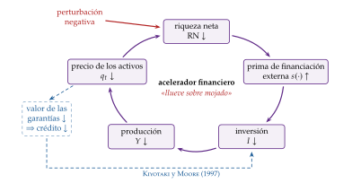
iii) Implicaciones
La perturbación inicial se amplifica y dura más: la riqueza neta tarda en reconstruirse. En el modelo de Bernanke, Gertler y Gilchrist, la inversión responde a una perturbación monetaria mucho más que sin fricciones.
Es un acelerador en clave financiera: el de Samuelson y Hicks (I.4.3) amplificaba por la variación de las ventas; este, por la del patrimonio.
c) Extensiones
Las garantías (Kiyotaki y Moore, 1997): si solo se presta contra el valor de los activos (la tierra, la vivienda), una caída de su precio recorta el crédito, obliga a vender y vuelve a bajar el precio. Perturbaciones pequeñas causan fluctuaciones grandes y persistentes: un ciclo del crédito.
Los bancos: tras 2008, el capital de los propios intermediarios limita cuánto pueden prestar; sus pérdidas encogen el crédito a toda la economía, y las compras de activos del banco central pueden suplirlos (Gertler y Kiyotaki, 2010; Gertler y Karadi, 2011) [ver tema 3.A.37]. Cúrdia y Woodford (2010) añaden un diferencial de crédito que la regla monetaria debe vigilar, y E. Sims y Wu (2019) resumen el modelo con fricciones financieras en 4 ecuaciones, la cuarta con las compras de activos, publicado después con Ji Zhang (E. Sims, Wu y Zhang, 2023). Así las fricciones financieras entran en la NEK.
Para España, el modelo EREMS, con un sector bancario, descompone cada trimestre el crecimiento del PIB en la contribución de cada perturbación; en octubre de 2026 atribuía a la demanda y al crédito el crecimiento por encima de la media (Boscá et al., 2026).
d) Evidencia empírica
El crédito anticipa las crisis: en 14 países desarrollados desde 1870, su crecimiento predice las crisis financieras (Schularick y Taylor, 2012); las recesiones que siguen a un auge del crédito son más profundas y lentas en recuperarse (Jordà, Schularick y Taylor, 2013, 2017), y el aumento de la deuda de los hogares anticipa un menor crecimiento (Mian, Sufi y Verner, 2017).
Las crisis bancarias cuestan mucho más: de media, el precio real de la vivienda cae un 35 % en 6 años y la bolsa un 55 % en 3 años y medio, y la deuda pública real crece un 86 % (Reinhart y Rogoff, 2009a, 2009b).
Y dejan cicatriz: tras las crisis financieras la producción no vuelve a su tendencia anterior (Cerra y Saxena, 2008): es la histéresis [ver tema 3.A.28].
e) Valoración
Explican la amplificación y la persistencia que le faltaban al ciclo real y a la NEK, y han entrado en los modelos de los bancos centrales.
Pero explican mal el auge: con expectativas racionales cuesta generar una burbuja de crédito desde dentro del modelo, y las crisis son muy no lineales, lo que los modelos linealizados pierden.
La política económica ante el ciclo financiero
La política macroprudencial: si el ciclo financiero tiene vida propia, hace falta un instrumento propio. El colchón de capital anticíclico obliga a los bancos a acumular capital en el auge del crédito y les deja usarlo en la caída; los límites a la relación entre el préstamo y el valor de la vivienda (LTV) o entre la deuda y la renta (DSTI) frenan el endeudamiento [ver tema 3.B.27]. Pegatina: «guarda pan para mayo y leña para abril».
En España, con la brecha aún negativa, el Banco de España subió el colchón al 0,5 % en octubre de 2025 y al 1 % desde el 1 de octubre de 2026: con su marco de 2024, el colchón es positivo en tiempos normales para poder liberarlo en una crisis (Banco de España, 2025, 2026).
La política monetaria: ¿debe el banco central subir los tipos para frenar una burbuja?
limpiar después (cleaning): los precios de los activos solo importan por su efecto en la inflación esperada; las burbujas son difíciles de detectar y pincharlas cuesta producción (Bernanke y Gertler, 1999);
ir contra el viento (leaning against the wind): el Banco de Pagos Internacionales propone tener en cuenta el ciclo financiero, porque una inflación baja puede convivir con un auge del crédito (Borio, 2014); Svensson (2017) calcula que, con los modelos actuales, los costes de subir los tipos superan a los beneficios.
Hoy predomina un reparto: la política macroprudencial es la primera línea de defensa ante el ciclo financiero y la monetaria se ocupa de la inflación, teniendo en cuenta la estabilidad financiera [ver tema 3.A.36].
En la crisis, evitar la espiral de Fisher: prestamista de última instancia, liquidez para los bancos y compras de activos cuando el tipo oficial no puede bajar más [ver tema 3.A.40], y sanear pronto los balances.
En resumen, el ciclo financiero no es un tercer ciclo aislado: es el amplificador del real, y explica por qué algunas recesiones son tan hondas y largas. La tabla 4 reúne las respuestas de todas las teorías.
| Teoría | Origen | Propagación | Persistencia | ¿Estabilizar? |
|---|---|---|---|---|
| Multiplicador-acelerador (Samuelson, Hicks) | Endógeno, de demanda | Multiplicador y acelerador de la inversión | Dinámica de la ecuación; techo y suelo | Sí, con la demanda |
| Ciclo endógeno no lineal (Kaldor, Goodwin) | Endógeno, real | Inversión y reparto de la renta | Ciclo límite u órbitas cerradas | Discutido |
| Impulso y propagación (Frisch, Slutsky) | Exógeno, aleatorio | Sistema amortiguado | Suma de perturbaciones | — |
| Monetario (Friedman, Lucas) | Exógeno, nominal (dinero) | Confusión de precios (Lucas) | Poca (Lucas) | Reglas, no discreción |
| Ciclo real (Kydland, Prescott) | Exógeno, real (tecnología) | Precios de los factores, sustitución intertemporal, inversión | Capital y, sobre todo, \(\rho_A\) | No: el ciclo es eficiente |
| Neokeynesiano (Clarida, Galí, Gertler) | Exógeno, real o nominal | Equilibrio general y rigideces nominales | Rigideces, hábitos, indexación | Sí: política monetaria |
| Ciclo financiero (Minsky, Bernanke, Gertler) | Endógeno en el auge del crédito; exógeno en los modelos | Riqueza neta, prima y garantías | Reconstruir el patrimonio; histéresis | Sí: macroprudencial y monetaria |
Fuente: elaboración propia.
Conclusión
Recapitulación: en conclusión, el ciclo es un movimiento conjunto, recurrente y no periódico de la actividad, que se mide como la brecha respecto a una tendencia que no se observa (tabla 4).
Las primeras teorías lo explicaron con la dinámica de la demanda: el multiplicador-acelerador y los ciclos no lineales de Kaldor y Goodwin.
Las modernas lo explican con perturbaciones que se propagan: reales en una economía eficiente (el ciclo real) o de cualquier tipo en una economía con información imperfecta o rigideces nominales (Lucas, la NEK).
El ciclo financiero, más largo y amplio, se incuba en los auges del crédito y amplifica el ciclo real a través del patrimonio de los prestatarios.
Relevancia: de la respuesta depende la política. Si el ciclo es eficiente, estabilizarlo es un error; si nace de rigideces, la política monetaria lo suaviza, y si lo amplifica el crédito, hace falta además una política macroprudencial. Los bancos centrales y la Comisión estiman el potencial y la brecha para fijar los tipos y el saldo estructural, y desde 2008 los supervisores miden también el ciclo financiero.
Extensiones: la heterogeneidad de los hogares [ver tema 3.A.37]; la histéresis, cuando las recesiones dañan el potencial [ver tema 3.A.28]; la política fiscal en el ciclo [ver tema 3.A.38]; la regulación financiera [ver tema 3.B.27]; los ciclos endógenos de equilibrio, en los que la economía es, como dice Roger Farmer, un barco sin ancla que no vuelve a ningún estado estacionario (Farmer, 2010), y la unión de ciclo y crecimiento, que el ciclo real empezó y el crecimiento endógeno lleva más lejos [ver tema 3.A.44].
Opinión: la teoría del ciclo es quizá donde mejor se ve el dilema entre realismo y claridad: cuantas más variables quiere explicar un modelo, más difícil es saber por qué canal actúa una perturbación o una política. El método del ciclo real se quedó y sus conclusiones no: el dinero y el crédito importan, y 2008 mostró que el ciclo financiero no es una extensión menor cuando estalla.
Idea final: volviendo al refrán del principio, siempre que llovió, escampó, pero no da igual cuánto tarde en escampar. Si el ciclo fuera solo la respuesta óptima a perturbaciones de productividad, bastaría con poner buena cara al mal tiempo; como el dinero y el crédito importan, hay margen para la política: guardar en los años buenos, como pide el colchón anticíclico, y actuar pronto en los malos, cuando llueve sobre mojado. Porque las recesiones que nacen del crédito escampan tarde y dejan cicatriz: la histéresis hace que parte de lo perdido no se recupere nunca.
Preguntas que puede hacer el tribunal: ¿cómo explican los modelos actuales la crisis de 2008 y la de 2020? Si la crítica al crecimiento exógeno llevó al crecimiento endógeno, ¿se puede hacer la misma crítica a una teoría del ciclo cuyo origen último es exógeno y aleatorio? ¿Pueden integrarse ciclo y crecimiento en un mismo marco? Las respuestas están en la valoración del ciclo real, en el apartado III y en las extensiones de la conclusión.
A. Anexo: historia del pensamiento sobre el ciclo
A.1. Las teorías de las crisis (1750-1860)
Antes de hablar de ciclos se habló de crisis, sucesos aislados que interrumpían el curso normal de la economía. Las mencionaban ya los mercantilistas, los fisiócratas y Adam Smith; la crisis británica de 1825 suele tomarse como la primera crisis general del capitalismo industrial.
La sobreproducción: en la segunda mitad del siglo XVIII, el conde de Lauderdale, Thomas Spence y Heinrich Storch explicaron las depresiones por un exceso de capacidad que el consumo no podía absorber.
Los clásicos (James Mill, Say, Ricardo, Senior) lo negaron con la ley de Say (Say, 1803): lo que falla en una crisis es la composición de la producción, no su volumen.
Tras las guerras napoleónicas, el debate del exceso general de oferta (general glut, 1819-1824) enfrentó a Malthus, Sismondi y Chalmers, para quienes podía faltar demanda por el reparto de la renta, con Say y Ricardo (Sismondi, 1819; Malthus, 1820; Say, 1820) [ver tema 3.A.2].
El dinero y el crédito: las crisis de 1825 y 1836 llevaron las finanzas al análisis. La controversia entre la escuela monetaria (Samuel Jones Loyd, lord Overstone) y la bancaria (Thomas Tooke), a finales de los años 30 y principios de los 40 del siglo XIX, explicó las crisis por el hundimiento de la inversión tras las pérdidas de las burbujas que el crédito fácil había alimentado; la llevaron a Alemania Mangoldt, a Francia Courcelle-Seneuil y a Estados Unidos Amasa Walker.
Los desajustes entre sectores: la escuela histórica alemana (Rau, Roscher, Brentano) desechó las teorías monetarias y buscó las crisis en las proporciones entre la producción y el consumo de cada sector: es el origen de la «tradición continental» del ciclo, frente a la «tradición inglesa» de los desajustes en el tiempo.
Los socialistas: unos vieron las crisis como resultado del reparto de la renta bajo el capitalismo (Godwin, Thompson, Proudhon, Rodbertus); otros, como resultado inevitable de la organización capitalista de la producción (Sismondi, Louis Blanc, Marx, Engels, Kautsky). Marx dejó 3 explicaciones que no llegó a unir: la caída de la tasa de ganancia, la realización y la desproporción entre sectores [ver tema 3.A.2].
Les faltaban la historia suficiente para ver un patrón, una teoría macroeconómica que lo explicara y estadísticas fiables que lo midieran. Su repetición se atribuía a la repetición de sus causas.
A.2. La edad dorada de las teorías del ciclo (1860-1930)
William Petty ya había hablado de un ciclo de unos 7 años de abundancias y carestías,20 pero la idea no tuvo continuidad. El ciclo decenal lo propusieron William Langton (1857) y John Mills (1867), que lo ligaron a los ánimos y al crédito, y Jevons, que lo ligó a las cosechas y a las manchas solares (Jevons, 1884). Pero es Juglar (1862) quien lo convierte en objeto de estudio, con un periodo de 7 a 11 años.
Con el equilibrio como concepto central de la teoría, sobre todo tras la revolución marginalista de 1871, las fluctuaciones regulares tenían poco sitio. Para Walras, las crisis eran como una tormenta que agita un lago: una perturbación del equilibrio, no parte de él (Walras, 1874). La teoría del ciclo quedó en manos de las escuelas históricas alemana y francesa y de los institucionalistas estadounidenses; en el periodo de entreguerras, Mitchell y el NBER fueron sus mayores expertos, centrados en los hechos.
La recesión de 1920 fue un revulsivo: solo entonces los teóricos empezaron a explicar el ciclo. Las explicaciones se agrupan por tipos:
climáticas: las manchas solares de Jevons; los ciclos del clima (1914) y de Venus (1923) de Henry Moore, y los pequeños ciclos climáticos que se amplifican de Johan Åkerman (1928);
de la sobreinversión (tradición continental): auges de la inversión financiados con crédito bancario que agotan los recursos (Tugan-Baranovsky, 1894; Spiethoff, 1902; Robertson, 1915; Cassel, 1918). Tras 1920 la retoman la escuela de Kiel, sin dinero, y la austriaca, con él;
psicológicas y del acelerador (tradición angloamericana): se invierte esperando una demanda que, cuando llega la nueva capacidad, ya no existe (Aftalion, 1913; Clark (1917); Pigou, 1927). La escuela de Cambridge y la de Estocolmo explicaron las crisis por los desajustes entre expectativas y resultados, facilitados por el crédito, y revivieron el viejo debate entre la escuela bancaria y la monetaria;
monetarias: el crédito de los intermediarios de Hawtrey (1913) y el tipo de los bancos por debajo del natural de los austriacos (Mises, 1912; Hayek, 1931);
del subconsumo: la demanda no alcanza a la producción (Hobson, 1910; Foster y Catchings, 1928);
de las perturbaciones: Frisch (1933) y Slutzky (1937) (I.4.2).
La Gran Depresión desacreditó la idea de un ciclo periódico, y la Teoría general cambió la pregunta: ya no por qué hay ciclos, sino por qué puede haber un paro duradero [ver tema 3.A.4]. El interés por el ciclo volvió tras la Segunda Guerra Mundial, con las herramientas de la macroeconomía keynesiana (I.4.3).
B. Anexo: el modelo de ciclo real paso a paso
B.1. El modelo general
El hogar maximiza la utilidad esperada sujeto a su restricción de cada periodo (II.1.2). Con el multiplicador \(\lambda_t\) de cada restricción, las condiciones de primer orden en \(t\) son \[C_t^{-\theta}=\lambda_t,\qquad \chi L_t^{\varphi}=\lambda_t\,w_t,\qquad \lambda_t=\beta\,\mathbb{E}_t\left[\lambda_{t+1}\,(1+r_{t+1})\right],\] de las que salen la ecuación de Euler y la del trabajo de (5). La condición de transversalidad descarta las sendas explosivas [ver tema 3.A.29]: \[\lim_{T\to\infty}\mathbb{E}_0\left[\beta^T\lambda_TK_{T+1}\right]=0.\]
La empresa no tiene un problema intertemporal, porque alquila el capital cada periodo: maximiza \(A_tK_t^{\alpha}L_t^{1-\alpha}-w_tL_t-(r_t+\delta)K_t\) y paga los productos marginales (4).
Equilibrio competitivo: precios \(\{w_t,r_t\}\) y asignaciones \(\{C_t,I_t,L_t,K_{t+1},Y_t\}\) tales que hogares y empresas optimizan y los mercados de bienes, trabajo y capital se vacían (tabla 5).
| Ecuación | Qué dice | |
|---|---|---|
| (1) | \(Y_t=C_t+I_t\) | demanda agregada en una economía cerrada sin Estado |
| (2) | \(Y_t=A_tK_t^{\alpha}L_t^{1-\alpha}\) | función de producción |
| (3) | \(K_{t+1}=(1-\delta)K_t+I_t\) | acumulación del capital |
| (4) | \(w_t=(1-\alpha)A_t(K_t/L_t)^{\alpha}\) | salario real igual al producto marginal del trabajo |
| (5) | \(r_t+\delta=\alpha A_t(K_t/L_t)^{\alpha-1}\) | alquiler del capital igual a su producto marginal |
| (6) | \(C_t^{-\theta}=\beta\,\mathbb{E}_t[C_{t+1}^{-\theta}(1+r_{t+1})]\) | ecuación de Euler |
| (7) | \(\chi L_t^{\varphi}=C_t^{-\theta}w_t\) | oferta de trabajo |
| (8) | \(C_t+K_{t+1}=w_tL_t+(1+r_t)K_t\) | restricción del hogar |
| (9) | \(\ln A_t=\rho_A\ln A_{t-1}+\varepsilon^A_t\) | perturbación tecnológica |
Fuente: elaboración propia a partir de D. Romer (2019, cap. 5) (tabla del tema de la nueva macroeconomía clásica).
Son 7 variables endógenas, una exógena (\(A_t\)), 8 parámetros y una perturbación (\(\varepsilon^A_t\)). Hay 8 ecuaciones para 7 endógenas: una sobra, porque la restricción del hogar (8) es la demanda agregada (1) una vez que se sustituyen (3), (4), (5) y la homogeneidad de grado 1 de la producción.
El original de Kydland y Prescott (1982) es más rico: la inversión tarda varios trimestres en convertirse en capital productivo (time to build), el ocio pasado da utilidad y la perturbación tecnológica tiene un componente permanente y otro transitorio que los agentes no distinguen. El tiempo de construcción ayuda a la persistencia, porque los proyectos empezados siguen en marcha. No es la ley de movimiento del capital del modelo básico, (6), que es la estándar.
Respuestas a una perturbación de todas las variables, con persistencia y sin ella, en el gráfico 17.

Fuente: elaboración propia: simulación del modelo log-linealizado con la calibración del gráfico 7 (gráfico del tema de la nueva macroeconomía clásica).
B.2. La solución cerrada de McCallum
Supuestos: depreciación completa, \(\delta=1\); utilidad logarítmica sin desutilidad del trabajo, \(\theta=1\) y \(\chi=0\), de modo que la oferta de trabajo es inelástica, \(L_t=1\); sin tendencia, \(\ln A_0=0\) (es decir, \(A_0=1\)), y \(\ln A_t=\rho_A\ln A_{t-1}+\varepsilon^A_t\). Con ellos, \(Y_t=A_tK_t^{\alpha}\), \(K_{t+1}=I_t\), \(1+r_t=\alpha A_tK_t^{\alpha-1}\) y la ecuación de Euler es \[\frac{1}{C_t}=\beta\,\mathbb{E}_t\!\left[\frac{\alpha A_{t+1}K_{t+1}^{\alpha-1}}{C_{t+1}}\right].\]
Conjetura: el hogar ahorra una fracción constante \(s\) de la producción, \(K_{t+1}=sA_tK_t^{\alpha}\) y \(C_t=(1-s)A_tK_t^{\alpha}\).
Comprobación: con la conjetura en \(t+1\), \(\alpha A_{t+1}K_{t+1}^{\alpha-1}/C_{t+1}=\alpha/[(1-s)K_{t+1}]\), que no depende de \(A_{t+1}\) y es conocido en \(t\). La ecuación de Euler queda \[\frac{1}{(1-s)A_tK_t^{\alpha}}=\frac{\alpha\beta}{(1-s)K_{t+1}}\ \Longrightarrow\ K_{t+1}=\alpha\beta\,A_tK_t^{\alpha},\] que coincide con la conjetura si \(s=\alpha\beta\).
∎
En logaritmos: \(\ln K_{t+1}=\ln(\alpha\beta)+\ln A_t+\alpha\ln K_t\) y \(\ln Y_{t+1}=\ln A_{t+1}+\alpha\ln(\alpha\beta)+\alpha\ln Y_t\); en el estado estacionario sin perturbaciones, \(\ln\overline Y=\frac{\alpha}{1-\alpha}\ln(\alpha\beta)\). Restando, sale (7).
Persistencia: con \(\rho_A=0\) y una perturbación unitaria en \(t\), \(\hat y_t=1\), \(\hat y_{t+1}=\alpha\) y, en general, \(\hat y_{t+k}=\alpha^k\) (gráfico 8). Con \(\rho_A>0\), \(\ln A_{t+k}=\rho_A^k\) y \[\hat y_{t+k}=\sum_{j=0}^{k}\alpha^{k-j}\rho_A^{\,j}=\frac{\rho_A^{k+1}-\alpha^{k+1}}{\rho_A-\alpha},\] con forma de joroba: la respuesta del periodo siguiente, \(\alpha+\rho_A\), es 1,28 con \(\rho_A=0{,}95\) y \(\alpha=1/3\).
Límites de esta versión: con \(s\) constante, el consumo y la inversión son proporciones fijas de la producción y tienen su misma volatilidad, cuando en los datos la inversión es mucho más volátil; y el trabajo no varía. Con depreciación parcial y oferta de trabajo elástica se corrigen los 2 problemas, al precio de perder la solución cerrada.
B.3. Limitaciones y extensiones
El origen de las fluctuaciones:
las perturbaciones tecnológicas se miden con un residuo de Solow que también recoge la intensidad del esfuerzo y la utilización del capital; corregido por ello, las perturbaciones son más pequeñas (Burnside, Eichenbaum y Rebelo, 1993; Basu, Fernald y Kimball, 2006);
las recesiones como retrocesos tecnológicos son difíciles de defender, salvo que la «tecnología» incluya el precio del petróleo, la regulación o el clima;
identificando las perturbaciones tecnológicas como las únicas que mueven la productividad del trabajo a largo plazo, Galí (1999) encuentra que las horas caen a corto plazo tras una mejora tecnológica, al revés que en el modelo; el resultado se discute por su sensibilidad a la especificación;
otras perturbaciones reales mejoran el ajuste: el gasto público (Christiano y Eichenbaum, 1992; Baxter y King, 1993) [ver tema 3.A.38], los impuestos (McGrattan, 1994) o las perturbaciones sectoriales (Long y Plosser, 1983).
La persistencia: Nelson y Kang (1981) y Nelson y Plosser (1982) mostraron que muchas series tienen raíz unitaria, de modo que quitarles una tendencia determinista puede generar ciclos espurios y las perturbaciones tienen efectos permanentes, lo que encaja con perturbaciones tecnológicas (I.2.1).
El mercado de trabajo: el modelo necesita una oferta de trabajo muy elástica para que las horas varíen mucho con salarios poco variables, y la micro estima elasticidades bajas. Con trabajo indivisible, las horas varían por el margen extensivo y la elasticidad agregada es alta aunque la individual sea baja (Hansen, 1985; Rogerson, 1988) [ver tema 3.A.25].
La neutralidad del dinero: el modelo la cumple incluso con dinero explícito, por ejemplo con una restricción de pago por adelantado (Cooley y Hansen, 1989) [ver tema 3.A.35]. La evidencia la rechaza a corto plazo:
la ecuación de San Luis (Andersen y Jordan, 1968) regresa la variación del PNB nominal sobre la de la cantidad de dinero (M1) y la del gasto público de pleno empleo: cada dólar adicional de dinero eleva el PNB nominal en unos 5,8 dólares en un año, mientras que el efecto del gasto no es significativo. Pero correlación no es causalidad: el dinero responde a la actividad;
el análisis histórico: en Estados Unidos entre 1867 y 1960, los movimientos del dinero de origen monetario fueron seguidos por movimientos de la producción en el mismo sentido (Friedman y Schwartz, 1963); C. D. Romer y Romer (1989) identifican 6 episodios de la posguerra en los que la Reserva Federal decidió provocar una recesión para bajar la inflación (el último, con Volcker en 1979), tras los que el paro sube unos 2 puntos;
los VAR, modelos en los que cada variable depende de los valores pasados de todas, con la política medida por el tipo de interés (C. A. Sims, 1992; Christiano, Eichenbaum y Evans, 1996), y su combinación con la identificación narrativa (C. D. Romer y Romer, 2004), encuentran efectos reales grandes y rápidos [ver tema 3.A.37].
La Gran Depresión: Prescott intentó explicar las grandes depresiones con la productividad (Kehoe y Prescott, 2002); la explicación dominante sigue siendo monetaria y financiera (Friedman y Schwartz, 1963; Bernanke, 1983).
C. Anexo: el filtro de Hodrick y Prescott y los filtros de paso banda
El problema: el filtro elige la tendencia \(\{y^p_t\}\) que resuelve (1), una combinación de 2 objetivos opuestos, ponderados por \(\lambda\):
el primer sumatorio es el componente cíclico al cuadrado, la distancia entre la serie y su tendencia;
el segundo, la variación de la tasa de crecimiento de la tendencia al cuadrado.
Los casos extremos:
con \(\lambda=0\) solo cuenta el primer término: \(y^p_t=y_t\), el ciclo es cero y toda la serie es tendencia;
con \(\lambda\to\infty\) solo cuenta el segundo: las segundas diferencias de la tendencia valen cero y la tendencia es una recta, la de mínimos cuadrados.
La solución: las condiciones de primer orden forman un sistema lineal, \((\mathbf{I}+\lambda\,\mathbf{D}'\mathbf{D})\,\vec{y}^{\,p}=\vec{y}\), con \(\mathbf{D}\) la matriz de \((T-2)\times T\) de las segundas diferencias y \(\vec{y}\) y \(\vec{y}^{\,p}\) los vectores de la serie y de su tendencia: la tendencia de cada trimestre es una media ponderada de toda la serie, pasada y futura. Por eso el final de la muestra se revisa cuando llegan datos nuevos.
El valor de \(\lambda\) es discrecional: 1600 con datos trimestrales (Hodrick y Prescott, 1997), que en frecuencias deja en la tendencia las oscilaciones de más de unos 8 años; con otras frecuencias, la regla de la cuarta potencia de Ravn y Uhlig (2002) (6,25 anual y \(129\,600\) mensual), aunque se siguen viendo 100 y \(14\,400\). Con un \(\lambda\) mucho mayor la tendencia apenas se dobla (gráfico 2).
La versión de una cola usa solo los datos hasta \(t\): no se revisa con datos futuros, que es lo que necesita un regulador; es la que usa Basilea III para la brecha de crédito, con \(\lambda=400\,000\) (III.1).
La crítica de Hamilton (2018): el filtro crea dinámicas espurias, sus valores finales no son fiables y \(\lambda=1600\) no tiene base estadística. Propone tomar como ciclo el error de prever \(y_{t+8}\) con \(y_t,\dots,y_{t-3}\) en una regresión, que no usa datos futuros. Véase también Phillips y Jin (2021).
Los filtros de paso banda (Baxter y King, 1999; Christiano y Fitzgerald, 2003) son medias móviles cuyos pesos se eligen para quedarse solo con las oscilaciones de 6 a 32 trimestres: quitan la tendencia y además el ruido de muy corto plazo. El de Baxter y King pierde datos al principio y al final; el de Christiano y Fitzgerald los conserva con pesos asimétricos. Con los datos de España, el HP y el paso banda dan casi el mismo ciclo (gráfico 18).
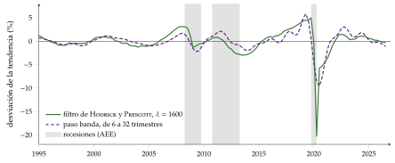
Fuente: elaboración propia con datos de Eurostat (Eurostat, 2026b): componente cíclico con el filtro HP (\(\lambda=1600\)) y con el de Christiano y Fitzgerald (2003) (6 a 32 trimestres), 1995T1-2026T2.
D. Anexo: los ciclos endógenos de Kaldor y Goodwin
D.1. El ciclo no lineal de Kaldor (1940)
Idea: con funciones de inversión y de ahorro no lineales, la economía oscila sola, sin perturbaciones ni parámetros exactos (Kaldor, 1940).
Supuestos: la inversión \(I(Y_t,K_t)\) y el ahorro \(S(Y_t,K_t)\) dependen de la renta y del capital. La inversión responde poco a la renta cuando esta es muy baja (hay capacidad ociosa) o muy alta (faltan recursos y suben los costes), y mucho en la zona intermedia: tiene forma de S. Un capital mayor reduce la inversión (\(I_K<0\)) y aumenta el ahorro (\(S_K>0\)).
Desarrollo: la renta sube cuando la inversión supera al ahorro y el capital crece con la inversión neta, \[\dot Y_t=a\,\big[I(Y_t,K_t)-S(Y_t,K_t)\big],\qquad \dot K_t=I(Y_t,K_t)-\delta K_t ,\] con \(a>0\) la velocidad de ajuste (local de este anexo).
Para un capital dado, las curvas se cortan 3 veces: el equilibrio central es inestable (allí la inversión es más sensible a la renta que el ahorro) y los extremos, estables (gráfico 19).
En el equilibrio alto se acumula capital: la inversión baja y el ahorro sube hasta que ese equilibrio y el central se funden y desaparecen, y la economía salta al bajo, la recesión. En él el capital se desgasta, la inversión sube y el ahorro baja hasta que desaparece el equilibrio bajo y la economía salta al alto.
Chang y Smyth (1971) demostraron, con el teorema de Poincaré y Bendixson, que si el equilibrio central es inestable el sistema tiene un ciclo límite: una órbita cerrada a la que convergen todas las trayectorias.
Valoración: el ciclo se mantiene solo y su amplitud no depende de las condiciones iniciales, pero las formas de las funciones son ad hoc y no hay decisiones optimizadoras ni dinero.
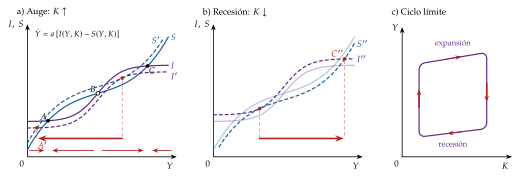
D.2. El ciclo de crecimiento de Goodwin (1967)
Idea: el ciclo como lucha de clases por el reparto de la renta, con las ecuaciones depredador-presa de Lotka y Volterra (Goodwin, 1967).
Supuestos (en tiempo continuo; letras locales de este anexo): \(\omega_t\equiv w_tL_t/Y_t\) es la participación de los salarios en la renta; \(U_t\) la tasa de paro y \(1-U_t\) la de empleo; la relación capital-producto \(v\equiv K/Y\) es fija; la productividad del trabajo crece a la tasa \(g\) y la población activa a la tasa \(n\); los trabajadores consumen todo su salario y los capitalistas invierten todos sus beneficios, sin depreciación; y el salario real crece más cuanto menor es el paro, \(\gamma_w=f(U_t)\) con \(f'<0\) (una curva de Phillips en términos reales).
Desarrollo:
como se invierten todos los beneficios, \(\dot K_t=(1-\omega_t)Y_t\), y con \(v\) fija la producción crece al ritmo del capital, \(\gamma_Y=(1-\omega_t)/v\); el empleo crece \(g\) puntos menos y la tasa de empleo, además, \(n\) puntos menos;
la participación de los salarios crece lo que el salario real menos la productividad.
El sistema es \[\gamma_{\omega}=f(U_t)-g,\qquad \gamma_{1-U}=\frac{1-\omega_t}{v}-(n+g),\] con el equilibrio en \(\omega^*=1-v\,(n+g)\) y \(f(U^*)=g\).
Fuera de él, la economía gira en órbitas cerradas a su alrededor, en sentido antihorario en el plano \((1-U_t,\omega_t)\) (gráfico 20): con mucho empleo suben los salarios y la participación del trabajo; los beneficios caen, se invierte menos y cae el empleo; con paro, los salarios se moderan, se recuperan los beneficios y vuelve la inversión.
El empleo hace de presa y la participación de los salarios, de depredador.
Valoración: une ciclo, crecimiento y reparto, una tradición que siguen los postkeynesianos [ver tema 3.A.4]; pero es determinista, la amplitud depende de dónde se empieza (las órbitas son neutras, no un ciclo límite) y un pequeño cambio del modelo altera su comportamiento.
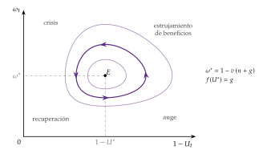
Fuente: elaboración propia a partir de Goodwin (1967).
E. Anexo: preguntas de test
Duraciones: ciclos de Kitchin, unos 40 meses; de Juglar, 7-11 años; de Kuznets, 15-25; de Kondratieff, unos 50. El ciclo económico dura de 1 a 8 años; el financiero, unos 16 de media.
Filtro HP: \(\lambda=1600\) trimestral; con \(\lambda=0\) no hay ciclo y con \(\lambda\to\infty\) la tendencia es lineal. Brecha de crédito: HP de una cola con \(\lambda=400\,000\); colchón anticíclico desde 2 puntos y máximo (2,5 %) con 10. Paso banda: de 6 a 32 trimestres.
Samuelson: \(Y_t=c(1+v)Y_{t-1}-cvY_{t-2}+G\); oscila si \(c(1+v)^2<4v\); es estable si \(cv<1\).
McCallum: \(\delta=1\), \(\theta=1\), \(L_t=1\) (oferta inelástica); \(s=\alpha\beta\) es un resultado; \(\hat y_{t+k}=\alpha^k\) con \(\rho_A=0\). Calibración canónica: \(\alpha=1/3\), \(\beta=0{,}99\), \(\delta=0{,}025\), \(\rho_A=0{,}95\), \(\sigma_\varepsilon=0{,}007\).
Fechas: Juglar (1862); Frisch (1933); Slutsky (1937); Samuelson (1939); Kaldor (1940); Burns y Mitchell (1946); Hicks (1950); Goodwin (1951, acelerador no lineal; 1967, ciclo de crecimiento); Lucas (1972); Nordhaus (1975); Kydland y Prescott (1982); Long y Plosser (1983); Bernanke y Gertler (1989); Kiyotaki y Moore (1997); Bernanke, Gertler y Gilchrist (1999); Clarida, Galí y Gertler (1999); Borio (2014).
Trampas: el general glut es de 1819-1824; los equilibrios de manchas solares no son de Jevons; la divina coincidencia es de Goodfriend y King y de Rotemberg y Woodford (1997), y el nombre, de Blanchard y Galí (2007); el modelo de Lucas (1972) es de información imperfecta, no de rigideces.
Preguntas de exámenes anteriores, en el simulador:
Bibliografía
Los términos transmisión, propagación y persistencia se usan aquí con un significado distinto para ordenar la exposición; en la literatura se emplean a menudo como sinónimos.↩︎
«Los ciclos económicos son un tipo de fluctuación de la actividad económica agregada de las naciones que organizan su trabajo sobre todo en empresas: un ciclo consiste en expansiones que se producen aproximadamente a la vez en muchas actividades económicas, seguidas de recesiones, contracciones y reactivaciones igual de generales que se funden con la fase de expansión del ciclo siguiente; esta secuencia de cambios es recurrente pero no periódica; los ciclos duran de más de un año a 10 o 12 años; no son divisibles en ciclos más cortos de carácter parecido con amplitudes parecidas a las suyas» (Burns y Mitchell, 1946, traducción propia).↩︎
Durante décadas se buscaron ciclos regulares superpuestos: los de existencias de Kitchin (1923), de unos 40 meses; los de la inversión de Juglar (1862), de 7 a 11 años; los de la construcción de Kuznets (1930), de 15 a 25 años, y las ondas largas de Kondratieff (1935), de unos 50 años. Schumpeter (1939) les dio estos nombres y explicó las ondas largas con las oleadas de innovaciones. La idea de ciclos deterministas superpuestos se abandonó: los datos no muestran periodicidades estables.↩︎
Lo de los 2 trimestres seguidos de caída del PIB es una convención periodística, no la regla del NBER. Para fechar con un algoritmo se usan las reglas de Bry y Boschan (1971), en la versión trimestral de Harding y Pagan (2002): cada pico va seguido de un valle y al revés, cada fase dura al menos 2 trimestres y cada ciclo completo al menos 5.↩︎
Los más usados son TRAMO-SEATS, desarrollado por Víctor Gómez y Agustín Maravall en el Banco de España, y X-13ARIMA-SEATS, de la Oficina del Censo de Estados Unidos.↩︎
\(\lambda\) es aquí el parámetro del filtro, una letra local de este apartado y del anexo C; en otros temas es un multiplicador de Lagrange o la velocidad de convergencia.↩︎
Con datos anuales se solía usar \(\lambda=100\) y con mensuales, \(14\,400\). Ravn y Uhlig (2002) muestran que, para que el filtro haga lo mismo que con datos trimestrales, \(\lambda\) debe cambiar con la cuarta potencia de la frecuencia: 6,25 con datos anuales y \(129\,600\) con mensuales.↩︎
El consumo de bienes no duraderos, como la alimentación, cambia poco en las crisis; el de duraderos, como los coches, se puede aplazar y fluctúa más que el PIB.↩︎
Las explicaciones solían ser conjeturas construidas alrededor de los hechos, desde los márgenes de la escuela neoclásica (los historicistas, los institucionalistas). Solo en los años 20 se intentó unir el ciclo con la teoría económica: en 1926, Adolph Lowe todavía se preguntaba cómo era posible una teoría del ciclo. Además, en el siglo XIX lo que más oscilaba eran los precios, no la producción: las primeras teorías del «ciclo» lo eran de los precios, y la definición del ciclo como movimiento de la producción es del siglo XX.↩︎
No confundir con los equilibrios de manchas solares de la teoría moderna (Azariadis, 1981; Cass y Shell, 1983): si todos creen que una variable sin relación con la economía (una «mancha solar») la mueve, la economía la sigue, porque las expectativas se cumplen solas [ver tema 3.A.3].↩︎
Para Spiethoff el impulso no venía de unos tipos de interés artificialmente bajos, sino de inventos o mercados nuevos que elevaban la rentabilidad de la inversión por encima del tipo de mercado, como en el proceso acumulativo de Wicksell. Robertson veía las fluctuaciones como naturales y aun buenas, pero no su amplificación por el endeudamiento que acompaña a los auges de inversión, que deja frágiles a los inversores, ni por las señales confusas del sistema monetario: un antecedente del ciclo nominal y del financiero.↩︎
Para los austriacos, el origen está en el crédito que se concede sin un ahorro previo que lo respalde, agravado por una política monetaria expansiva: ni es exógeno (como en el ciclo real) ni es un defecto del mercado (como para los keynesianos). La recesión «sanea» la estructura productiva, y por eso rechazan las políticas de demanda en las crisis. Algunos, como Jesús Huerta de Soto, proponen un coeficiente de caja del 100 % para los depósitos a la vista, una propuesta sin consenso ni dentro de la escuela. La idea del crédito que se adelanta al ahorro vuelve en el ciclo financiero (III.2).↩︎
Que después adaptó a su teoría del crecimiento (Harrod, 1939) [ver tema 3.A.43].↩︎
Con raíces complejas, el periodo de la oscilación es \(2\pi/\omega\), con \(\cos\omega=c\,(1+v)/\big(2\sqrt{c\,v}\big)=1{,}6/1{,}79\approx0{,}894\); \(\omega\approx0{,}464\) y \(2\pi/\omega\approx13{,}5\) periodos. Con el acelerador contemporáneo, \(I_t=v\,\Delta Y_t\), el multiplicador de impacto es \(1/(1-c-v)\) y exige \(c+v<1\) [ver tema 3.A.34]; con los retardos de Samuelson lo que importa es la estabilidad de la trayectoria, \(c\,v<1\). No se contradicen: son 2 versiones del mismo principio.↩︎
La tradición endógena volvió con el equilibrio general: Jess Benhabib y Kazuo Nishimura (Benhabib y Nishimura, 1979, 1985) y Grandmont (1985) obtienen ciclos deterministas en economías competitivas con agentes que optimizan, y Farmer (2010) hace de la confianza, con los equilibrios de manchas solares, el origen del ciclo.↩︎
Buiter (2009) llamó a la linealización «esta castración de los modelos macroeconómicos»: se pierden los umbrales, los puntos de inflexión y los aceleradores no lineales que importan en una crisis.↩︎
El modelo no tiene tendencia, como el del [ver tema 3.A.6]. Con crecimiento, la tecnología es \(A_t=A_0e^{g^At+\tilde A_t}\), un producto y no una suma, con \(\tilde A_t=\rho_A\tilde A_{t-1}+\varepsilon^A_t\) y \(g^A\) el crecimiento de la PTF; con Cobb-Douglas, \(g^A=(1-\alpha)\,g\), el progreso técnico aumentador del trabajo a la tasa \(g\) del modelo de crecimiento [ver tema 3.A.43]. Las variables se escriben entonces en desviaciones respecto de la senda de crecimiento equilibrado, y la ley de movimiento del capital por trabajador eficiente incorpora el crecimiento de la población y del progreso técnico.↩︎
La metáfora de las islas, en las que cada productor solo ve su mercado, es de Phelps (1970).↩︎
Los bancos centrales mueven los tipos poco a poco, y la regla se estima con suavización: \(i_t=\nu\,i_{t-1}+(1-\nu)(\rho+\phi_\pi\pi_t+\phi_x x_t)+\varepsilon_t\), con \(0\le\nu<1\). El tipo pasado recoge esa inercia, que da credibilidad y deja actuar a las expectativas; la inflación entra con \(\phi_\pi>1\) (principio de Taylor: el tipo real tiene que subir cuando sube la inflación, o el equilibrio no sería único), y la brecha con \(\phi_x\ge0\), porque una brecha positiva anuncia más inflación [ver tema 3.A.36]. Clarida, Galí y Gertler (2000) estiman que la Reserva Federal no cumplía el principio antes de Volcker.↩︎
«The medium of seven years, or rather of so many years as makes up the Cycle, within which Dearths and Plenties make their revolution» (Petty, 1662).↩︎